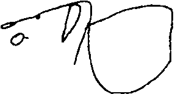

{1} Orrin Devinsky vd., kendi hastalarından onunda “nöbetlerin eşlik ettiği otoskopik olgular” tarif etmiş ve tıp literatüründeki benzer vakaları gözden geçirmişlerdir. Olaf Blanke ve İsviçre'deki meslektaşlarıysa epileptik hastaların beyin aktivitesini beden dışı deneyim esnasında görüntülemeyi başarmışlardır.
{2} Kevin Nelson ve Kentucky Üniversitesi'ndeki meslektaşları çözülme, öfori ve ölüme yakın deneyimlerle bağlantılı mistik duygularla rüya görme, REM uykusu ve uykuya dalma sınırında yaşanan sanrı hali arasındaki benzerlikleri vurgulayan çok sayıda çalışma yayımladılar.
{3} Franco'nun öyküsünü Mars'ta Bir Antropolog'daki “Rüyalarının Manzarası” adlı bölümde aktarmıştım.
{4} Epileptik müzik bazıları için olağanüstü “tanıdık” ama tanımlanamaz olsa da, nöbetlerden önce duyduğu müziği hemen tanıyanlar da vardır. Wilder Penfield ve meslektaşlarının Montreal Nöroloji Enstitüsü'nde uzun yıllar boyunca incelediği hastaların bazıları bu kategorideydi. Penfield, ağırlıklı olarak müzikli temporal lob nöbetleri geçiren en az on hastasını ayrıntılı biçimde tarif etmişti. Hastalar nöbet esnasında “işittikleri” müziklerin hepsini tanıyordu çünkü radyoda sürekli dinledikleri müzik parçaları, Noel şarkıları, ilahiler veya cingıllardı bunlar. Penfield, bu olguların her birinin temporal lobunda belli kortikal noktalar bulmuş, bu noktaları elektrikle uyardığında hastaların kendi özel epileptik melodilerini duymasını sağlamış, aynı noktaları cerrahi müdahaleyle çıkarmayı başardığında hastaların nöbetleri –ve halüsinatif melodiler– sona ermişti.
Emekli bir pediatri uzmanı, kompleks parsiyel nöbetler geçirdiği için kendisine gönderilen dokuz yaşında bir çocuk hakkında yazmıştı bana – bu vakada hastalık aileden geliyordu. Çocuğun nöbetlerine halüsinatif müzik eşlik ediyordu ve ilginç bir şekilde “teşhisi oğlunun tuhaf davrandığını gören ve çocuk şarkısı 'Pop Goes to Weasel'ı kendi kendine ıslıkla çaldığını duyan annesi koymuştu – çünkü annenin nöbetlerinin habercisi de aynı işitsel auraydı.”
{5} Müzikojenik epilepsi nöbetlerinin her zaman Nikonov için olduğu gibi tahrip edici olması gerekmiyor; bazen hoş, hatta canlandırıcı da olabilirler. Genç bir araştırmacı mektubunda şöyle diyordu:
Belirli müzikleri dinlerken bazen bir auranın yaklaştığını anlıyorum ve bunları bana hissettirdiklerine göre ayırt edebiliyorum – bazen korku, bazen tiksinti, kimi zaman da keyif duyuyorum, arkasından nöbetler geliyor. Özellikle Orta Asya müziklerini dinlerken bu deneyimi yaşıyorum ama çok çeşitli başka müziklerin de nöbetlerimi tetiklediği oldu. Auraları hoş olan nöbetlerden keyif aldığımı itiraf etmeliyim, hatta ilaç kullandığım zaman onları özleyecek gibi oluyorum ama korkunç auraları hayatım boyunca asla aramam. Ben de bir müzisyenim ve müzik eğitimi almaya ilgi duymamın sebebinin sözünü ettiğim hoş auralar olduğunu düşünüyorum.
{6} David Poskanzer, Arthur Brown ve Henry Miller, duygusal çağrışımları olan seslerden çok seslerin salt sonik ya da müzikal niteliklerinin önemini, radyo dinlerken saat tam 20:59'da sürekli bilincini yitiren altmış iki yaşında bir adamın ayrıntılı olgu sunumunu yaptıkları güzel bir makalede tartışmışlardı. Aynı adamcağız, bundan başka kilise çanlarının sesi yüzünden de nöbet geçiriyordu. Geriye dönülüp bakıldığında, radyonun tetiklediği atakların asıl nedeninin BBC'nin akşam dokuz haberlerinden önce kullandığı, Bow Kilisesi'ne ait çan sesleri olduğu anlaşılmıştı. Poskanzer vd., çeşitli uyaranlar yardımıyla –farklı kiliselerin çan sesleri, tersten çalınan kilise çanı kayıtları, kilise orgu ve piy8no müziği– nöbetlerin yalnızca belirli bir frekans aralığındaki tonlar ve “çanı andıran” sesler ya da tınılarla tetiklendiğini göstermeyi başarmışlardı. Ayrıca tersten çalındığında, çan sesinin etkisini yitirdiğini de gözlemlemişlerdi. Hasta, Bow Kilisesi çanlarının kendisinde duygusal çağrışımlar uyandırmadığını iddia etmişti; anlaşılan o ki, belirli frekansta ve tınıyla, belirli bir düzenle çalınan notalar nöbetlerini tetiklemeye yetiyordu. (Poskanzer vd., hastanın Bow Kilisesi çanları yüzünden nöbet geçirdikten sonra yaklaşık bir hafta boyunca benzer seslere karşı bağışıklık kazandığını da gözlemlemişlerdi.)
Hafif epileptik rahatsızlıkları kabullenip bunlardan doktorlarına ya da yakınlarına söz etmeyen pek çok kişi olduğu anlaşılıyor. Bu bölümü okuyan bir nörobilimci, bana “takdis ayini sırasında kilise çanları çaldığı zaman hafif nöbetler geçiriyorum ... Bu beni hiç rahatsız etmiyor,” diye yazmış, “ama şimdi doktoruma söylesem mi diye düşünüyorum,” diye eklemişti. (EEG ya da beyin taramasının sorunu saptamada işe yarayıp yaramayacağını da merak ediyordu.)
{7} Critchley, uzun kariyeri boyunca bu konuya yeniden dönecekti, 1977'de, müzikojenik epilepsi al anında çığır açan makalesini yayımladıktan kırk yıl sonra R. A. Henson'la birlikte editörlüğünü yaptığı Music and the Brain [Müzik ve Beyini adlı kitaba bu konuda iki bölüm daha ekleyecekti.
{8} Müzik dinleyerek, hatta müzik yaparak nöbetlerini dindiren veya engelleyen hastalarla da karşılaştım. Şiddetli nöbetler geçiren bir hasta bana şunları yazmıştı:
14 yaşımdayken nedeni bilinmeyen bir grand mal nöbet geçirdim. Arkasından, yıllar boyu süren konvülsiyonlar ve depresif bir hayat geldi. Beni kurtaran, piyano oldu. Piyano çalarken hiçbir şey beni ele geçiremiyordu. Yakın zamanda psikiyatrım piyano çalarken nöbet geçirip geçirmediğimi sordu. Daha önce düşünmemiştim ama, gerçekten de piyano çalarken asla nöbet geçirmedim.
{9} Bkz. David J. M. Kraemer vd., 2005.
{10} Gerçekten de, istemli imgeleme bir profesyonel müzisyenin bilinçli ve hatta bilinçdışı yaşamına egemen olabilir. Temelde, sanatçılar her zaman çalışırlar, hatta çalışmıyor gibi göründüklerinde bile. Ned Rorem, Facing the Night [Geceyle Yüzleşmek] adlı günlüğünde bunu çok güzel anlatmıştı: “Çalışmadığım bir an bile yok. Burada oturmuş Kafka'dan, yabanmersininden, eşcinsellik ya da beysboldan söz ederken bile düşüncelerim üzerinde çalıştığım parçadan bir an olsun ayrılmıyor; notaları portenin üzerine yerleştirme eylemi sadece sonradan yapılması gereken bir ikincil düşünce.”
Ama bestecilerin de hepimiz gibi konu dışı imge örgüleri olabilir. Besteci Joseph Horovitz bana kafasında “yirmi dört saat klasik müzik” çaldığını söylemişti. Bundan memnundu ama kendi orijinal bestelerini yapması gerektiği zaman zihninde çalan müziği bastırması gerekiyordu.
{11} Eski topraklar, “Love and Marriage” adlı bu şarkının, “Soup and Sandwich” adıyla Campbell çorbalarının reklam müziği olarak kullanıldığım anımsayacaklardır. Akılda kalıcı melodiler bestelemekte usta olan Van Heusen onlarca –kelimenin tam anlamıyla– unutulmaz şarkı yazmıştı. Bing Crosby, Frank Sinatra ve başkaları için bestelediği “High Hopes,” “Only the Lonely” ve “Come Fly with Me” bunlardan bazılarıdır. Bestelerinin çoğu televizyona uyarlanmış ya da reklam müziği olarak kullanılmıştır.
{12} Müzkofili'nin ilk baskısından sonra, beyin kurduyla başa çıkma yöntemleri konusunda açıklama gönderen pek çok okurum oldu. Önerilen yöntemlerden biri, tamamına ermeyen, döne döne daireler çizen kırık bir müzik parçası olmaktan kurtarmak amacıyla şarkıyı sonuna kadar dikkatle söylemek ya da dinlemekti. Beyin kurdunun yerine geçecek başka bir şarkı söylemek ya da dinlemek de bir çözüm (ama bunun da yeni bir beyin kurduna dönüşmeyeceğinin güvencesi yok).
Müzikal imgeler, özellikle kafanın içine zorla girip kendini tekrarlama eğiliminde olanlara bir motor bileşen, kişinin farkında olmadığı ama bedelini ödediği sesaltı bir “mırıldanma” veya şarkı söyleme eşlik ediyor olabilir. “Ağır bir müzik döngüsüyle geçen günlerin sonunda,” diyordu yazıştığım kişilerden biri, “boğazım bütün gün avaz avaz şarkı söylemişim gibi tahriş oluyor.” Yazışma arkadaşlarımdan David Wise ise, “işitsel düşünmeyle ilişkilendirilen... konuşma organlarının gerilmesi ve hareket ettirilmesi de dahil olmak üzere müzik dinlemeyle bağıntılı kasların” kademeli kas gevşetme teknikleri yardımıyla rahatlatılmasının sinir bozucu beyin kurtlarını durdurmakta etkili olduğunu yazmıştı. Bu yöntemlerden bazıları kimi insanlarda işe yararken, çoğunluk beyin kurtlarına çare bulamıyor, diyordu Nick Younes.
{13} Northumberland ve İskoçya folk müziği araştırmacısı, müzisyen Jeremy Scratcherd'ın verdiği bilgilere göre:
Eski folk müziği yazmalarını inceleyince, “Gaydacı kurtçuğu” adını taşıyan pek çok ezgi örneğiyle karşılaşıyoruz. Müzisyenin kafasının içine sızdığı zaman çürüyen bir elmanın içindeki kurtçuk gibi dönüp durarak kurbanını sinir eden ve beynini kemiren ezgilerin böyle nitelendirildiği anlaşılıyor. (1888) Northumbrian Minstrelsy'de [Northumberland Halk Ozanları Derlemesi] böyle bir ezgi bulunuyor ... En eski gayda müziği derlemesi 1733'te diğer bir Northumberland'lı olan William Dixon tarafından kaleme alınmış ve başka İskoçya derlemeleriyle birlikte onun eseri, “kurtçuğun” büyük olasılıkla on sekizinci yüzyıl başında ortaya çıktığına işaret ediyor. Aradan geçen onca zamana rağmen benzetmenin neredeyse aynı olması ilginç!
{14} Bu tür döngüler genellikle on beş–yirmi saniye kadar sürer ve bu süre, ender rastlanan palinopsi adlı bir rahatsızlığın belirtisi olan görsel döngüler ya da devirlerin uzunluğuna eştir. Palinopside, kısa bir sahne –örneğin birkaç saniye önce odaya giren birinin görüntüsü– tekrar tekrar görülebilir. Görsel ve işitsel döngülerin periyodik olarak benzeşmesi, her ikisinin de altında kısa süreli bellekle ilişkili olması mümkün belli bir fizyolojik sabitin yatıyor olabileceğine işaret eder.
{15} Buna rağmen, özellikle müziği duydukları ya da hayal ettikleri anda otomatik olarak notaları zihinlerinde canlandıran müzisyenler için, bir kulak kurdu ender olarak görsel öğeler de içerebilir. Yazıştığım bir Fransız korno sanatçısı, bir beyin kurdu illetine tutulduğunda başına gelenleri şöyle anlatıyordu:
Okumak, yazmak ve matematik gibi uzamsal alanlarla ilgili bütün becerilerim altüst oluyor. Beynim [beyin kurdunu] özellikle uzamsal ve kinestetik açıdan çeşitli şekillerde işlemekle meşgul oluyor: Nota aralıklarının göreli uzunluklarını ölçüyorum, notaları uzama yayılmış halde görüyorum, parçası oldukları armonik yapının düzenini gözden geçiriyorum, parmak dokunuşlarını ve notaları çalmak için yapılması gereken kas hareketlerini elimde hissediyorum ama bunları dışarı vurmuyorum. Özellikle akılsal bir etkinlik olduğunu söyleyemem, oldukça özensiz bir süreç benim için, kasıtlı olarak çaba harcamıyorum, kendiliğinden gelişiyor…
Bu kendiliğinden gelen [beyin kurtlarının] fiziksel eylemler ya da sıradan bir sohbet gibi görsel düşünce gerektirmeyen eylemlere asla engel olmadığını da belirteyim.
{16} Müziğe doymuş modern kültürümüzde işlevden yoksun kalsalar bile, beyin kurtları daha eski avcılık–toplayıcılık günlerinde büyük önem taşıyan bir uyarlanımdan kaynaklanmış olabilir; hareket eden hayvanların sesini ya da başka önemli sesleri tanınırlıklarından emin olana dek tekrarlamak. Yazışma arkadaşlarımdan Alan Geist'ın anlattığı üzere:
Hiç müzik dinlemeden ormanda geçirdiğim beş altı günün sonunda, çevremde duyduğum sesleri, özellikle de kuş seslerini kendiliğimden tekrarladığımı şans eseri fark ettim. Çevremdeki yabani doğa, “aklıma takılan şarkıya” dönüştü. ...[Belki de, daha eski çağlarda] yolculuk eden bir insan nerede olduğunu söyleyen görsel ipuçlarına belleğindeki sesleri de eklemek suretiyle aşina olduğu bölgeleri daha çabuk tanıyabiliyordu ... Bu sesleri kendi kendine prova ettiği zaman, uzun dönem belleğine kaydetmesi daha kolay oluyordu.
{17} Robert Jourdain, Music, the Brain, and Ecstasy [Müzik, Beyin ve Esrime] adlı kitabında, kocasının duyduğu müziği tarif eden Clara Schumann'ın günlüğünden alıntı yapıyor: “işittiği müzik olağanüstüydü, enstrümanların sesi dünya üzerinde dinlenebilecek bütün enstrümanlardan daha güzeldi.” Arkadaşlarından biri,
Schumann'ın “tuhaf bir konuda kendisine içini döktüğünü” anlatmıştı: “Kafasının içinde harikulade güzel, baştan sona tamamlanmış müzik parçalan duyuyormuş! Ses, uzaktan gelen pirinç nefeslilerin fon müziğini oluşturan muhteşem armonilere benziyormuş!'
Hayatının sonlarına doğru yakalandığı nörosifilizin yanı sıra, Schumann'da büyük olasılıkla manik–depresif veya şizoafektif bozukluk da vardı. Peter Ostwald'ın besteciyle ilgili araştırması Schumann: Music and Madness'ta [Schumann: Müzik ve Delilik] anlattığı üzere, yaratıcılık günlerinde zaman zaman hükmedip istediği gibi kullanabildiği halüsinasyonlar, son krizinde Schumann'ı ele geçirmiş, önce “meleksi” sonra “şeytani” bir müziğe dönüşmüş, son olarak da katlanılmaz bir şiddetle gece gündüz kafasının içinde çalan tek bir “korkunç” nota; bir la notası halini almıştı.
{18} University of California–San Diego'dan Diana Deutsch, müzikal halüsinasyonlar gören pek çok kişiyle yazışmış ve bu varsanıların zaman içinde bazen bir–iki notaya dönüşecek kadar kısalma yönündeki genel eğilimi onu çok şaşırtmış. Müzikal halüsinasyon deneyimleri bu açıdan fantom uzuv sendromuyla da benzeşiyor, zira fantom uzuvlar da zaman içinde küçülme ya da “kısalma” eğilimi gösterir, böylece bir fantom kol, zamanla insanın omzundan çıkan pençe gibi bir ele dönüşebilir.
{19} Bu olgu sunumunu Brown University'den R. R. David ve H. H. Fernandez gerçekleştirmişti.
{20} Rebuilt: How Becoming Fart Computer Made Me More Human [Yeniden inşa: Yarı Bilgisayarlaştırılmak ^sanlığımı Nasıl Artırdı?] adlı kitabında tarif ettiği üzere, Michael Chorost'un koklear implantı taktırdıktan sonraki deneyimleri Bayan C.'ninkilerden çok farklı:
İmplant aktive edildikten bir ya da iki hafta sonra, kafamın içindeki çılgın orkestranın çoğu üyesi görevinden ayrıldı. İmplant, yıldızları görünmez kılan güneş gibi işitsel halüsinasyonları yok etti. Kulaklığı çıkardığım zaman uzaktaki kalabalığın uğultusunu hâlâ duyuyorum. Ama jet motoru gürültüsü, yüzlerce müşterisi olan bir restoranın uğultusu ya da enerji veren uyuşturucular kullanan caz bateristlerine beynimde yer yok artık.
İşitsel korteksim öfkeyle şöyle diyordu sanki: “Bana ses vermezsen, sesi ben yaratırım.” Bunu yaptı da, işitme kaybımla ters orantılı olarak hiç durmadan ses üretti. Ama artık istediği kadar sese, hatta daha da fazlasına boğulduğu için yeniden mutlu oldu ve çenesini kapadı.
Bunu fark ettiğim ilk gece, giysilerimi çıkardım ve derin, huzurlu bir sessizlik içinde uykuya daldım.
{21} Hatıra” adlı bu yazıyı, Karısını Şapka Sanan Adam'da (YKY, 1996) okuyabilirsiniz.
{22} 1975'te, Norman Geschwind ve meslektaşları yayımladıkları ufuk açıcı araştırmayla nörologların dikkatini bu az incelenen sendroma çekmişlerdi (bkz. Ross, Jossman, vd.). Son on–yirmi yılda, tıp literatüründe müzikal halüsinasyonlara gösterilen ilgi giderek artıyor, 1990'ların başında G. E. Berrios literatürün iki tane ayrıntılı incelemesini yayımladı. Belli bir grubun müzikal halüsinasyonlarını konu alan şimdiye dek yapılmış en kapsamlı klinik araştırma, güney Galler'deki yaşlı insanların müzikal halüsinasyonlarının oranlarını, fenomolojisini ve ekolojisini inceleyen on beş yıllık araştırmalarının sonucunu 2005 yılında yayımlayan Nick Warner ve Victor Aziz'e aittir.
{23} Bir devlet hastanesinin psikiyatri polikliniğinde çalıştığım yirmi beş yıl boyunca sesler duyduğunu söyleyen pek çok şizofreni hastasıyla karşılaştım ama çok az sayıda hasta müzik duyduğunu bildirdi. Her ikisini de duyan tek bir hastam vardı ve Angel C. adlı bu hasta müziği ve sesleri birbirinden rahatlıkla ayırt edebiliyordu. On sekiz yaşında geçirdiği ilk psikotik krizden beri, kendisine hitap eden, suçlayan, tehdit eden, kandırmaya çalışan ya da emreden “sesler” duyuyordu. Buna karşın, “müziği” otuzlu yaşlarının ortasında, kısmen sağırlaştıktan sonra duymaya başlamıştı. İşittiği müzikten korkmuyordu ama “şaşkındı”; oysa işittiği “emirler” dehşet verici ve tehditkârdı. Müzikal halüsinasyonları sanki kalabalık bir gruptan çıkan “karmaşık bir mırıltıyla” başlıyor, derken farklılaşarak müziğe, sevdiği türde müziğe dönüşüyordu. “Eskiden fapanyol plakları dinlerdim,” dedi. “Şimdi onları yeniden dinliyor gibiyim ama ortada plak falan yok.” Kimi zaman müzikle dönüşümlü olarak başka sesler de duyuyordu –başlangıçta duyduğu “mırıltı”, “yukarıdan geçen jet uçaklarının sesine benzeyen” gürültüler ve dikiş makinesi sesini andıran “fabrika gürültüleri.” Hem sözel hem müzikli halüsinasyonları olan bir hastayı inceleyen Yukio Izumi vd., hastanın beyninde, “büyük olasılıkla iki farklı türde halüsinasyonun farklı nedenlerini yansıtan” birbirinden “açıkça farklı” bölgesel kan akımı düzenleri bulmuşlardı.
Fakat kimi zaman, iki farklı türde halüsinasyon bir araya gelebilir ya da birleşebilir. Bir şizofreni hastasında, şarkıların sözleri tuhaf dönüşümler geçirerek her türden psikotik emri ve mesajı taşıyordu. Hasta, bunların beynine uzaydan ışınlandığına inanıyordu. Babasının kalp krizinden ölümünden sonra psikotik özellikli depresyon belirtileri göstermeye başlayan bir başka hasta, sürekli “Twinkle, Twinkle, Little Star” adlı çocuk şarkısının sözlerinin korkunç bir şekilde değişmiş halini duyuyordu ve buna, “Kalp Krizi Şarkısı” diyordu.
{24} Kimi zaman müzikal halüsinasyonlardan önce ortaya çıkan veya bunlara eşlik eden tinnitus genellikle kendi başına işitilir. Bazen, Gordon B.'nin tiz natürel fa'sı gibi tonal özellikler taşırken genellikle tıslamayı veya çınlamayı andırır. Tıpkı müzikal halüsinasyonlar gibi, tinnitusun çınlaması, tıslaması veya ıslığı andıran sesinin de dış kaynaklı olduğu sanılabilir. Birkaç sene önce kulağım çınlamaya başladığında, evimdeki bir radyatör buhar kaçırıyor sanmıştım ve onu beynimin yarattığını ancak çınlama sokağa çıktığımda beni “takip edince” anlamıştım. Tinnitus da tıpkı müzikal halüsinasyonlar gibi başkalarının sesini duymayı engelleyecek ölçüde yüksek sesli olabilir.
{25} Sheryl C. gibi Gordon'un deneyiminde de müzik mekanik bir sesin yerine geçmişti. Bu, beynin düzensizliği düzene çevirme yöntemi olabilir miydi? Ağır işitme yitimi birkaç saat içinde sağırlığa dönüşen ve sağırlıkla birlikte derhal müzikal halüsinasyonları başlayan Michael Chorost'un başına gelen de benzer bir şeydi. Rebuilt adlı kitabında, gürültüyle başlayan günlerinin nasıl müzikle sonlandığını anlatır:
Çok tuhaf ama, tahmin ettiğim gibi sessiz bir dünyada yaşamıyorum. Bu, benim için en azından alışılmış bir şey olurdu çünkü istediğim zaman işitme cihazlarımı çıkarıp neredeyse tamamen sessiz bir dünyaya gömülebiliyordum. Ama şimdi gümbürdeyerek akan bir nehrin, bir jet uçağının, binlerce müşterisi aynı anda konuşan bir restoranın gürültüsünü duyuyorum. Ses asla sonlanmıyor ve insanı bunaltacak kadar baskın.
...Ama tesellilerim de var. Gümbürtü ve çan sesleri akşamları yumuşuyor. İhtişamlı, etkileyici ve derin bir hal alıyorlar. Temposu veya ritmi olmayan devasa bir orgun ağır ağır değişen bir ağıt çaldığını duyuyorum. Şafak vaktinin ağırbaşlı azametini taşıyor.. duruma uygun, çünkü o esnada kulaklarım ölüyor. Ölüyorlar ama bir yandan da kendi cenazelerinde olağanüstü bir müzik çalıyorlar.
{26} Bakımevindeki hastalarımdan Margaret H. yıllardır işitme sorunları çekiyordu – sağ kulağında ciddi işitme kaybı, sol kulağında o:ta ölçüde işitme kaybı vardı ve her ikisi de ilerliyordu. Fakat Margaret işitme yitminden çok “rekrutman” denen rahatsızlıktan, yani seslere karşı aşırı ve anormal duyarlılıktan yakmıyordu. “Bazı sesleri neredeyse dayanılmaz hale getiren nahoş bir vurgudan” şikayet ediyordu. Bir yıl sonra bana şöyle dedi: “Şapele gidiyorum ama org ve koronun sesi giderek artıyor, artıyor ve tahammül edilmez hale gelene dek kabamın içinden çıkmıyor.” Bu dönemde kulak tıkacı kullanıyor, seslerin tatsız amplifikasyonunu ve distorsiyonunu daha da artırabileceğini düşündüğünden işitme cihazlarından faydalanmaya yanaşmıyordu.
Buna rağmen, beş yıl sonra bir sabah uyanıp da “My Darling elementine” adlı şarkının nakaratını tekrarlayan bir ses duyana dek Margaret H.'nin müzikal halüsinasyonu yoktu. Şarkının “çok hoş, yumuşak bir melodi” gibi başladığını, derken “hızlanarak yüksek sesli, cazı andıran, gürültülü, hiç de yumuşak olmayan” bir hal aldığını söylüyordu. “Başta hoşuma gidecek gibi oluyor ama sonra sertleşiyor, melodik bir hali kalmıyor!' Bi–kaç gün boyunca, yan odadaki hastamız Peder O'Brien'ın sürekli eski bir Sinatra plağı çaldığını sandı.
Bayan H.'nin halüsinasyonlarının giderek artan amplifikasyon, ses bozulması ve rahatsızlık verme gibi özellikleri eski işitsel sorunlarıyla aynıydı. Bu açıdan, (gerçek müziği çarpıtılmış olarak duysalar da) müzikal halüsinasyonları distorsiyonlu seslerden oluşmayan Gordon B. ve diğerlerinden ayrılıyordu.
{27} Sağırlıkla ilintilendirilen müzikal halüsinasyonlar yaşlı insanlarda daha yaygın görülse de, her yaşta başlayabilir ve ömür boyu sürebilir. İşitme engeli erişkinliğinin başında ortaya çıkan ve şimdi yaşlı bir hanım olan Mildred Forman'dan gelen mektup da bunu gösteriyor:
İşitme kaybı temel dil becerilerini kazandıktan sonra gelişen bir kadınım, uzun yıllar boyunca aralıksız devam eden müzikal halüsinasyonlarla yaşadım. Altmış yıl önce, işitme kaybımın başlangıcına çok yakın bir dönemde ortaya çıktılar... Yalnızca sağırlığımdan önceki zaman diliminde kulağıma çalınan melodileri anımsıyorum... içimdeki “iPod”. tanımadığım ve adlandıramadığım bir ezgi çalmaz ... Sağır olmadan önce piyano çalıyordum. Hâlâ nota okuyabiliyorum ve sayfadaki notalara baktığım zaman nasıl bir ses çıkarabileceklerini zihnimde canlandırabiliyorum. Ama okuduğum ve aslında hiç duymadığım şarkılar veritabanımda depolanmıyor, onları kısa süre içinde unutuyorum. Bundan dolayı, işitme sinirim aracılığıyla veritabanımın müzik bölümüne giren melodiler orada saklanırken, optik sinirim aracılığıyla girenlerin çabucak silindiğini düşünüyorum.
{28} Hastalarımın çoğu yetişkindir, fakat Michael'ın durumu ve ayrıca Müzikofili'nin ilk baskısından sonra aldığım bazı mektuplar, müzikal (ve başka türlü) halüsinasyonların çocuklarda sandığımızdan daha yaygın olabileceğini düşündürdü bana. Saygın besteci Steven L. Rosenhaus, yazdığı mektupta şunları anlatıyordu:
Hayatım boyunca yalnızca bir kez müzikal halüsinasyon deneyimim oldu ve onu da ancak kitabınızın bu bölümünü okuduğum zaman anımsadım. Çok küçüktüm, belki dört ya da beş yaşındaydım. Müziğe yatkın olduğum çoktan anlaşılmıştı; ebeveynlerim, konuşmayı bile öğrenmeden önce (iki yaşındayken) notaları doğru okuyarak şarkı söyleyen erken gelişmiş çocuklardan biri olduğumu söylerler. Bir Noel sabahı, “Little Drummer Boy”un orijinal (Ray Conniff korosu) düzenlemesini net bir şekilde duyarak uyandım. Müziğin nereden geldiğini öğrenmek için annemi odama çağırdım ama o, “Ben bir şey duymuyorum,” dedi. Ona ısrarla şarkıyı duyduğumu söylediğimi anımsıyorum, çalmaya devam ediyordu. Annemin ne tepki verdiğini anımsamıyorum (yalnızca tahmin edebiliyorum) ama bana rüya gördüğümü söylediğini anımsıyorum. Müzik bundan kısa bir süre sonra kendiliğinden sustu.
Louis Klonsky adlı bir okurum da yedi ya da sekiz yaşlarında Bronx'ta yaşarken başından geçen tuhaf bir müzikal deneyimi anlatmak için yazdı bana. Frank Sinatra'nın A Hole in the Head adlı filmini izlediğini ve “High Hopes” adlı şarkıya “tutulduğunu” anımsıyordu:
Filmi gördükten kısa süre sonra bir gece uyandım, uzun zaman uykuya dalamadım ve hayatımda ilk ve son kez, bu şarkının odamın penceresinin önünde “çaldığını” duydum. Dördüncü katta oturduğumuz için bu epey şaşırtıcıydı. Ertesi gün anneme müziği duyup duymadığını sordum, o da bana büyük olasılıkla rüya gördüğümü söyledi. Kitabınızı okuyana dek, bu tür halüsinasyonların varlığından bile haberim yoktu.
{29} Üç yıl sonra Michael'ın annesi bana oğlunun durumuyla ilgili son haberleri verdi:
Şimdi on iki yaşında olan ve yedinci sınıfa giden Michael, aralıksız müzik duymaya devam ediyor. Okulda stresli günler geçirmediği sürece, durumla eskisinden daha iyi baş ediyor görünüyor. Bazen migreni tutuyor ve o zaman müzik iyice şiddetlenerek birisi radyo frekansını değiştiriyormuş gibi karman çorman hale geliyor. Neyse ki migreni bu yıl eskisinden çok daha seyrek olarak tekrarlıyor. İlginçtir, müzik duyduğu zaman Michael'ın beyni bunu otomatik olarak kaydediyor ve duyduğu melodiyi yıllar sonra bile yeni dinlemiş gibi anımsayıp çalabiliyor. Beste yapmayı çok seviyor ve kulağı kusursuz.
{30} Şostakoviç'in beyin hasarını anlatan Donal Henahan imzalı bir yazı 1983'te New York Times'da yayımlandı. Henahan, olayın gerçekliğini destekleyecek bir kanıt bulunmadığını belirttikten sonra, bestecinin Leningrad kuşatması sırasında bir Alman şarapneliyle yaralandığına ve yıllar sonra çekilen bir röntgende beyninin işitsel bölgesinde bir metal parçası tespit edildiğine dair bir söylenti olduğunu anlatıyor.
Henahan'ın aktarımına göre:
Şostakoviç, metal parçasını ameliyatla aldırmak konusunda gönülsüzdü. Bunda şaşılacak bir şey yok, zira metal parçası beynine yerleştiğinden beri ne zaman başını yana eğse müzik duyduğunu söylüyordu. Kafasının içi –her seferinde faklı– melodilerle doluyordu ve beste yaparken bunlardan yararlanıyordu. Başını dik hale getirince müzik hemen kesiliyordu.
Sonradan, Şostakoviç'in hayatını ve müziğini araştıran Nora Klein'la konuşma fırsatı bulduğumda, bana şarapnel hikâyesinin “savaş döneminde bir yerlerde yayımlanan ufak çaplı bir saçmalık” olduğunu söyledi. “Şostakoviç düşman uçakları gökyüzünde uçarken bir çatıya falan çıkmadı; o sırada Yedinci Senfoni'nin ilk bölümlerini bestelemekle meşguldü.” Dr. Klein, bu tür uydurma hikâyeler üretmenin “Sovyet bürokratların en sevdiği eğlencelerden biri” olduğunu da ekledi.
{31} Meslektaşım nörolog Dr. John Carlson, temporal lob inmesi geçirdikten sonra şiddetli müzikal halüsinasyonlar deneyimlemeye başlayan hastası P. C.'den söz etmişti. Şimdi doksanlı yaşlarında olan Bayan C., altı yüzden fazla şiir ve sayısız ilahi yazmış olan yetenekli ve müziğe düşkün bir kadındı. Tuhaf deneyimlerini günlüğüne kaydetmişti. İki haftadan daha uzun süre boyunca, komşularından birinin gürültülü ve aralıksız şekilde, günün her saatinde bir kasetçalarla müzik dinlediğinden hiç şüphe duymamıştı. Derken durumun böyle olmadığını anlamaya başladı:
17 Mart – Kevin'le birlikte koridorda duruyorduk. Ona, “Theresa niçin aynı şarkıları çalıp duruyor acaba?” dedim. “Çok rahatsız oluyorum. Hatta çıldırmak üzereyim.”
Kevin, “Ben hiçbir şey duymuyorum,” diye yanıt verdi. Acaba iyice sağırlaşmaya mı başladı?
19 Mart – Sonunda telefonla Theresa'yı aradım. Müziği çalan o DEGİLM^. Sesin nereden geldiğini halâ anlayamadım.
23 Mart – Sürekli işittiğim müzik yüzünden yavaş yavaş aklımı kaçırmaya başlıyorum... Saatler boyunca uyuyamadım. Şimdi, “Silent Light” “Away in a Manger”, “Little Brown Church” ve yeniden “Sun of My Soul”u duyuyorum. Mart ayında Noel şarkıları nereden çıktı?
Her şarkının perdesi ve ritmi kusursuz, hepsi baştan sona eksiksiz çalıyor. KULAKLARIMDA bir sorun olabilir mi? Ya da AKLIMDA?
Bayan C., nisan ayında nörolojik değerlendirme için Dr. Carlson'a gitti, MR ve EEG tetkikleri yapıldı. MRG'de her iki temporal lobunda inme tespit edildi (sağ lobundaki daha akut bir tablo çiziyordu ve daha yakın zamanda gerçekleşmişti). Müzikal halüsinasyonları üç ya da dört ay içinde büyük ölçüde dindi ama aradan yıllar geçtikten sonra bile arada bir Bayan C.'yi ziyaret etmeyi sürdürdü.
{32} Evelyn Waugh 1975 yılında yayımlanan otobiyografik romanı The Ordeal of Gilbert Pinfold'da, alkol ve uyuşturucularla karıştırılan fazla dozda kloralhidrat kullanımına bağlı gelişen toksik hezeyan ya da psikoz halini tarif eder. Sinirlerini dinlendirmek için bir deniz yolculuğuna çıkan Pinfold'un aklı, her türlü işitsel halüsinasyona maruz kalır – sesler, gürültüler ve özellikle de müzik.
{33} Victoria dönemi hekimleri, yalnızca epilepsi değil, migren, halüsinasyonlar, tikler, kâbuslar, maniler ve her türlü heyecan için, renkli bir terim olan “beyin fırtmalan”m kullanıyorlardı. (Gowers, bunlar ve benzeri “hiperfizyolojik” durumların epilepsinin “sınırında” olduğunu söylüyordu.
{34} Daniel B. Smith, Muses, Madmen, and Proplıets: Retlıinking the History, Science and Meaning of Auditory Hallucinations [Müzler, Deliler ve Peygamberler: İşitsel Halüsinasyonların Tarihini, Bilimsel Açıklamalarını ve Anlamını Yeniden Düşünmek) adlı kitabında hem akıl sağlığı yerinde hem şizofrenik insanlarda işitsel halüsinasyonların kapsamlı ve zengin bir incelemesini sunar.
{35} Başka, daha basit halüsinasyonları olup olmadığını sordum. Bazen sadece “ding, dong, ding dong” sesini duyduğunu söyledi. “Dong” sesi “ding” sesinden çok daha alçaktı ve delirtici şekilde yüzlerce kez tekrarlanıyordu.
{36} Tabii her zaman böyle olmayabiliyor, yetenekli viyolonselist Daniel Stern için değildi örneğin. Stern'ün olağanüstü bir müzik belleği vardı ve işitme yeteneğinin körelmesiyle birlikte ortaya çıkan müzikal halüsinasyonlarmın neredeyse tamamı profesyonel müzik hayatı boyunca çaldığı ve baştan sona dinlediği viyolonsel konçertoları ya da başka yaylılar için bestelenmiş müziklerden oluşmaktaydı. Aynı zamanda yazar da olan Stern'ün Fabrikanf's Way adlı novellası müzikal halüsinasyonları hakkındaydı.
{37} Doksan üç yaşındaki Rangell psikanaliz çalışmalarına devam ediyor ve müzikal halüsinasyonları hakkında bir kitap yazıyor.
{38} On beş yıl önce ilk baypas ameliyatını geçirdiğinde “aynı ağırbaşlı şarkıları” duyduğuna dair belli belirsiz bir anısı da vardı ama bunlar kısa süre içinde yok olmuştu. (“Bu anımın gerçeğe dayalı olup olmadığına emin olamıyorum,” diye yazmıştı bana, “fakat bana umut veriyor.”)
{39} Stravinsky'nin Müziğin Poetikası'nda Beethoven ile Bellini'yi kıyaslarken yaptığı gibi, vurguyu diğer tarafa kaydırmak da mümkün: “Beethoven, salt inatla çalışmanın ürünü gibi görünen muazzam bir müzikal malvarlığı biriktirmişti. Bellini ise melodiyi talep dahi etmeden miras almış gibiydi. Sanki Cennet ona, “Sana Beethoven'in sahip olmadığı tek şeyi vereceğim,” demişti.
{40} Örneğin Gaser ve Schlaug'un 2003 tarihli; Hutchinson, Lee, Gaab ve Schlaug'un 2003 tarihli makaleleri.
{41} Müzisyen beyinlerindeki bu işitsel, görsel, motor ıve serebellar değişiklikleri şaşırtıcı bulan Nina Kraus ve meslektaşları (bkz. Musacchia ve diğerleri), müzisyenlerde beyin kökü seviyesindeki temel duyusal mekanizmaların da gelişip gelişmediğini merak ettiler. Arada gerçekten de farklar olduğunu buldular: “Konuşma ve müzikal uyaranlara karşı beyin sapı seviyesinde tepkilerin, müzisyenlerde müzisyen olmayan deneklere kıyasla daıha erken ve daha yoğun olduğu saptandı... Bazen akustik uyaranın verilişinden on milisaniye sonra tepki gözlemlenebiliyordu.” Bu kapasitenin, “müzik eğitimi ve alıştırma yapmakla doğru orantılı olduğunu” saptadılar.
{42} Tamamen sağır insanlarda bile doğuştan gelen müziksel yatkınlıktan söz etmek mümkün. İşitme engelli kişiler sıklıkla müziği çok severler ve ses değil de titreşim olarak hissettikleri ritme çok duyarlıdırlar. Ünlü perküsyoncu Evelyn Glenie on iki yaşından beri ileri derecede sağırdır.
{43} Çocukların, müzik derslerinin devlet okulu müfredatından çıkarıldığı ABD'de müzik eğitimi alması her zaman kolay ya da mümkün olmayabiliyor. Besteci ve önde gelen yeni müzik teknolojileri tasarımcılarından Tod Machover, müziği herkesin ulaşabileceği hale getirip “demokratikleştirerek” bu sorunu çözmeye çalışıyor. Machover ve MIT'nin Media Laboratuvarı'ndaki meslektaşları, Brain Opera (Beyin Operası), Toy Symphony (Oyuncak Senfonisi) ve popüler video oyunu Gitar Hero'nun yanında, Joshua Bell, Yo–Yo Ma, Peter Gabriel, Ying Quartet ve London Sinfonietta gibi profesyonel müzisyenlerin de kullandığı Hyperinstruments ile Hyperscore'u ve başka interaktif sistemleri geliştirdiler.
{44} Bunun pek az istisnası vardır – bazı otizmli çocuklar ve konjenital afazi gibi. Ama çoğunlukla, belirli nörolojik ya da gelişimsel sorunları olan çocuklar bile işlevsel dil yetisi kazanır.
{45} Steven Mithen, şarkı söylemeyi öğrenmenin mümkün olup olmadığını araştırdı ve bunun için denek olarak kendini kullandı. “Araştırmalarım müziğin insan genomunun derinlerine gömülü olduğu sonucuna ulaştırdı beni, hatta evrimsel kökleri konuşma dilinden çok daha eski zamanlara uzanıyor,” diye yazıyordu Mithen 2008'de New Scientist'te yayımlanan hoş ve samimi makalesinde. “Oysa ben şarkı söylemekten de, kaçırmadan bir ritme eşlik edebilmekten de acizdim.” Mithen bundan sonra okulda, sınıf arkadaşlarının önünde şarkı söylemeye zorlandığı için kendini nasıl “aşağılanmış” hissettiğini anlatıyor, öyle utanmış ki otuz beş yıldan daha uzun süre boyunca müzikle ilgili her türlü etkinliğe katılmaktan köşe bucak kaçmış. Fakat sonunda, bir yıl şan eğitimi alarak ton, ses perdesi ve ritim algısını geliştirip geliştiremeyeceğini öğrenmeye ve bu süreci işlevsel MRG ile belgelemeye karar vermiş.
Mithen'in şarkı söyleme becerisi –olağanüstü değilse de önemli ölçüde– gelişti ve MRG tetkiklerinde alt frontal girusla üst temporal girusun iki bölgesinde daha yoğun etkinlik gözlemlendi. Bu değişimler, müzik cümleleme, ses perdesini ayarlama ve sesini kullanma yönündeki gelişen becerisini yansıtıyordu. Ayrıca, başlangıçta bilinçli çaba gerektiren şey giderek otomatikleşmiş gibi, beyninin belli bölgelerinde etkinlik azalmıştı.
{46} Florence Foster Jenkins sahneye çıktığı dönemde Carnegie Hall'ı tıklım tıklım dolduran bir koloratur sopranoydu. Kendisini büyük bir şarkıcı sayan bu hanımefendi kusursuz bir kulak ve olağanüstü ses genişliği gerektiren en zor opera aryalarını söylemeyi pek seviyordu. Fakat azap verecek kadar yanlış, pes, hatta kulak tırmalayıcı notalara basıyor ve (görünürde) bunum hiç farkına varmıyordu. Ritim duygusu da hiç gelişmemişti ama muhteşem teatral gösterilerle dolu, sık sık kostüm değiştirdiği konserler seyirci akınına uğruyordu. Hayranlarının ona müzik yeteneğinin yokluğuna rağmen mi yoksa tam da bu yüzden mi bağlandığı bilinmiyor.
{47} 2000 yılında, Piccirilli, Sciarma ve Luzzi, inmeli bir müzisyende aniden başlayan amüziya vakasını aktardılar. “Müziği duyamıyorum,” diye şikâyet ediyordu genç adam. “Bütün notalar aynı geliyor kulağıma.” Konuşma sesini normal bir biçimde duyabiliyordu ve ritim algısı zarar görmemişti.
{48} Nabokov'un oğlu Dmitri babasının hiçbir müzik parçasını tanıyamadığını söylemiş, bana aktarıldığı kadarıyla. (Richard Cytowic ile David Eagleman'ın yazdığı Wednesd«y is Jndıgo Biue tfndigo Mavisi Çarşamba] adlı kitabın önsözünde anne ve babasının sinestezisinden de söz ediyor Dmitri.)
{49} Daniel Levitin, Ulysses S. Grant'in “müzik kulağı olmadığını ve yalnızca iki şarkıyı tanıyabildiğini” anlatıyor. Bu şarkılardan “biri Yankee Doodle idi, diğeri değildi.”
{50} Konjenital amüziyası olan kişilerin konuşma algısı ve ifade tarzında görünürde hiçbir anormallik yokken müzik algılarının ciddi biçimde özürlü olması gerçekten şaşırtıcı. Müzik ve konuşmanın ses niteliği gerçekten bu kadar farklı olabilir mi? Ayotte ve arkadaşları başlangıçta amüziyası olan kişilerin konuşma tonlamalarını algılayabilmesinin müziğin konuşmaya kıyasla daha ayrıntılı bir ses perdesi algısı gerektirmesiyle ilgili olabileceğini düşünmüşlerdi. Fakat Patel, Foxton ve Griffiths, amüziya rahatsızlığı olan bireylerin konuşmadan ayıklanan tonlama ve vurguları ayırt etmekte de büyük zorluk çektiğini gösterdiler. Dolayısıyla, ses perdesi farkını algılayamayan kişilerin konuşma sesini neredeyse normal biçimde çıkarabilmesi ve anlayabilmesinde sözcükleri, heceleri ve cümle yapılarını tanıma gibi diğer faktörlerin önemli bir rol oynadığı açık. Peretz ile meslektaşları şimdi de Çince gibi tonaliteye daha doğrudan bağlı diller için de aynısının geçerli olup olmadığını araştırıyorlar.
{51} Tıp literatüründe amüziyanın ilk ayrıntılı tarifi 1878'de Grant Allen tarafından Mind adlı dergide yapıldı:
Azımsanmayacak sayıda kadın ve erkek, birbirinden yarım oktav (veya daha fazla) uzaklıktaki iki tonu bilinçli bir şekilde ayırt etme yetisine sahip değil. Bu anomaliye ben Nota–Sağırlığı adını vermek istiyorum.
Allen'ın uzun makalesi, “bol bol gözlemleme ve üzerinde deney yapma fırsatı” bulduğu genç bir adam hakkında olağanüstü bir olgu sunumunu da içeriyordu – bu tür ayrıntılı olgu sunumları ondokuzuncu yüzyılın ikinci yarısında deneysel nöroloji ve psikolojinin tesis edilmesine büyük katkıda bulundu.
Diğer yandan, daha eski ve edebi bir amüziya betimlemesi, Charles Lamb'in 1823'te yayımlanan Essays of Elia adlı kitabındaki “A Chapter on Ears” [Kulaklar Üzerine] adlı bölümde bulunabilir:
Hatta duygusal açıdan bile müzikal uyuma meyilli olduğumu düşünüyorum. Ama detone olmadan bir melodi tutturmam organik olarak mümkün değil. “God Save the King”i hayatım boyunca çalıştım, sessiz köşelerde kendi kendime ıslıkla çaldım ve mırıldandım ama bana söylenenlere göre henüz yanına bile yaklaşabilmiş değilim. Müzikte bir notanın ne anlama geldiğini ya da notaların birbirinden ne farkı olduğunu (çabalamış olsam da) bilimsel olarak kavramam mümkündeğil. Bir sopranoyla tenoru ayırt etmekte daha da kötüyüm... [Kulak] müziğe pasif kalamaz. Yetersizliğine rağmen –en azından benimki– labirenti aşmaya çabalar, hiyeroglifler üzerinde dolaşan eğitimsiz bir göz gibi acı çeker. Bir İtalyan Operası seyretmeye çalışmıştım da en sonunda acıyla ve anlaşılması zor bir ıstırap içinde kalabalık sokakların en gürültülü yerlerine koşmuştum. Takip etmek zorunda kalmadığım seslerle çevreliyorum kendimi... Gündelik hayatın dürüst, kendinden başka bir şey olmaya çalışmayan sıradan seslerine sığınıyorum ve Öfkeli Müzisyen'in arafı benim cennetime dönüşüyor... Ingiliz sanatçı William Hogart'ın 1741 tarihli gravürü Öfkeli Müzisyen, penceresinin önündeki gürültüye sinirlenen bir kemancıyı konu alır.] Hepsinden öte, adına konçerto denen tahammül edilmez müzik parçaları algımı karartıp acılaştırıyor. Sözcükler başka, sonu gelmez bir ses saldırısına maruz bırakılmak başka...
{52} Bayan L'nin nörolojik temelli amüziyasının yanı sıra, sınırlı aralıktaki tonları üretebilen bir koklear implantı kullanan kişinin de teknolojik amüziyası olduğunu söyleyebiliriz. Koklear implant kullanıldığında, normal bir kulağın içindeki 3500 kıl hücresinin yerine 16 ya da 24 tane elektrot geçer. Bu zayıf frekans çözünürlüğü konuşmayı anlamayı sağlar ama müzik algısı zarar görür. 1995'te, koklear implantı kullanan Michael Chorost müzik deneyimini “sanat müzesinde dolaşan bir renk körü” olmaya benzetmişti. İmplantlara daha fazla sayıda elektrot eklemek çok zor çünkü insan bedeninin nemli ortamında elektrotları birbirinin çok yakınına yerleştirmek etkilerini yitirmelerine neden oluyor. Fakat yazılımcılar fiziksel elektrotlar arasına sanal elektrotlar yerleştirerek 16 elektrotluk bir implantı 121 elektrotlu bir implanta çevirebiliyorlar. Chorost, eskiden 70 hertz uzaklığındaki –orta frekans aralığında üç ya da dört ara tona eşdeğer– tonları ayırt edebilirken, yeni yazılım sayesinde 30 hertz uzaklığındaki sesleri de algılayabilmeye başlamış. Normal bir kulağın çözünürlüğünden çok daha düşük olsa da, implant Chorost'un müzikten keyif alabilme yetisini önemli ölçüde geliştirmiş. Bundan, teknolojik amüziyanın yine özel teknolojik araçlarla çözülebileceği anlaşılıyor. (Chorost'un büyüleyici anıları için bkz. Rebuilt: How Becoming Part Computer Made Me More Human ve Wired'a yazdığı “My Bionic Quest for Bolâro” adlı makale.)
{53} Daha sonra yine bu konuya kafa yorarken, Bayan L. Renkkörleri Adası adlı kitabımdaki dikkatini çeken bir bölümden söz etti. Doğuştan tamamıyla renk körü olan bir arkadaşımın söylediklerini aktarmıştım: “Çocukken, renkleri görmenin hoş olacağını düşünürdüm ... Kulağı müziğe tamamen duyarsızken aniden melodileri işitmeye başlayan biri gibi yepyeni bir dünya açılabilirdi önüme. Herhalde çok ilginç ama aynı ölçüde de kafa karıştırıcı olurdu.”
Bayan L.'nin dikkatini çeken bölüm buydu. “Bir mucize olsa ve melodileri duymaya başlasam benim de aklım karışır mıydı?” diye sordu. “Önce melodinin ne olduğunu öğrenmem mi gerekirdi? Ne işittiğimi nereden bilirdim?”
Müziği hiç “anlayamamış” olmak bir yana, müziği işitme yetisini yitirmek insanı çok derinden etkileyebilir, özellikle de müzik kişinin hayatının merkezinde yer alıyorsa. Sara Bell Drescher mektubu nda bunu anlatmıştı bana. “Müzik benim hayatım, neşem, varlık sebebimdi,” diye yazmıştı, ama ellili yaşlarında Meniere hastalığı yüzünden işitme yetisini büyük ölçüde yitirmişti. Ona göre bu,
bildiğim şekliyle hayatımın sonuydu. Altı ay içinde desibelleri kaybetmeye başladım ve bir yıl sonunda müziği işitemez hale geldim... Çok güçlü işitme cihazları yardımıyla konuşma sesini ayırt edebiliyordum ama müziği hiç duyamıyordum ... Bu şiddetli işitme yitimi pek çok başka eylemi gerçekleştirmeme engel oluyor, ama müziğin yokluğu hayatımda devasa bir boşluk bıraktı... Müzikle yaşamanın sevincinin yerini alabilecek hiç ama hiçbir şey yok.
{54} Beyin cerrahı Stephen Russel ve meslektaşı John Golfinos'un yazdığı çok sayıdaki olgu sunumundan biri, sağdaki birİncil işitme korteksinde (Heschl girusu) gliyom oluşan genç bir profesyonel şarkıcı hakkındaydı. Gliyomun cerrahi müdahaleyle alınmasından sonra şarkıcı ses perdelerini ayırt etmekte öyle büyük sorun yaşamaya başladı ki “İyi ki doğdun” şarkısı da dahil olmak üzere hiçbir melodiyi tanıyamıyor, söyleyemiyordu. Neyse ki bu zorluklar geçiciydi; genç kadın şarkı söyleme ve müziği algılama becerisine üç hafta sonra yeniden kavuştu. İyileşmesinin doku geri kazanımıyla mı yoksa beyin plastisitesiyle mi ilgili olduğu bilinmiyor. Cerrahlar, benzer tip amüziyanın sol Heschl girusundaki tümörlerde görülmediğini vurguluyorlar.
Doğuştan amüziyası olan hastalarda sağ alt frontal girusta beyaz madde bölgesinin az geliştiği yakın zamanda ortaya kondu. Söz konusu bölgenin ses perdesi kodlaması ve melodik ses perdesi belleğiyle ilişkili olduğu biliniyor. (Bkz. Hyde, Zatorre vd., 2006.)
{55} Bu bana görme duyusunu orta yaşlarda yitiren ve onunla birlikte bir zamanlar capcanlı olan görsel imgeleme yetisini de kaybeden John Hull'un Touching the Rock [Kayaya Dokunmak] adlı kitabını anımsattı. Parmağıyla havada çizmediği sürece, 3 rakamının nasıl bir şekli olduğunu hayalinde canlandıramıyordu. Yitirdiği görsel bellek yerine canlandırmalı ya da yöntemsel belleğini kullanmak zorundaydı.
{56} Halüsinojenler ya da esrar da geçici bir simültanagnoziyi and ıran bir etkiye neden olabilir. Kişi kendisini aralarındaki bağlantılar zayıflayan ya da tamamen yok olan, şaşırtıcı biçimde tek tek belirgin hale gelen izole renkler, biçimler, sesler, dokular ve tatların meydana getirdiği bir yoğun duygular kaleydoskopunda bulabilir. Anthony Storr, Music and the Mind'da [Müzik ve Zihin] meskalin aldıktan sonra Mozart dinleme deneyimini şöyle anlatır: “Bana ulaşan seslerin nabız gibi attığının, capcanlı olduğunun farkındaydım, yayın teli nasıl ısırdığını hissediyor, seslerin doğrudan duygularıma hitap ettiğini anlıyordum. Fakat bunun aksine biçimi takdir etme yeteneğimi yitirmiştim. Bir motif her tekrarlanışında şaşırtıyordu beni. Motifler tek başlarına büyüleyici olabiliyordu ama aralarındaki ilişki yitip gitmişti.”
{57} Virgil'in hikâyesini, Mars'ta Bir Antropolog'un “Görmek ve Görmemek” adlı bölümünde anlatmıştım.
{58} O halde Mozart için belli bir tonda yazılmış her müzik parçası kendi benzersiz karakterine sahip demekti, başka bir perdeye transpoze edildiğinde parça artık kimliğini yitirecekti. Yazışma arkadaşlarımdan Steve Salemson şöyle bir soru sormuştu:
Bugünkü orkestraların akort sesi olarak kullandığı la notasının frekarısı 440 hz kabul edilmektedir ve Mozart'ın orkestrasından yarım ton daha tizdir. Bu, Mozart'ın 40. Senfonisi'nin (sol minör) günümüzde Mozart'ın döneminde sol diyez minör kabul edilen tondan çalındığı anlamına mı geliyor?
{59} Triton –artık dörtlü (ya da caz dilinde eksik beşli)– şarkı söylerken çıkarması zor bir aralıktır ve genellikle çirkin, tekinsiz, hatta şeytani bir niteliği olduğu düşünülür. Erken dönem kilise müziğinde kullanılması yasaklanmıştı, ilk müzik kuramcıları ona diabolus in musica (“müzikteki şeytan”) adını vermişlerdi. Tartini, bu aralığı tam da bu yüzden keman için yazdığı Şeytan Trili sonatında kullandı. (Steve Salemson'ın anımsattığı üzere: “Leonard Bernstein, 'müzikteki şeytan'ı Batı Yakası Hikâyesi müzkalindeki 'Mana' adlı şarkıda etkili ve yinelenen bir biçimde kullanmıştı.)
Triton tek başına kulağa sert gelse de, eksiltilmiş bir yedili akor oluşturmak üzere başka bir tritonla kolaylıkla doldurulabilir. Oxford Companion ta Music'e göre, bunun “kulak okşayıcı bir etkisi vardır,., Bu, bütün aktarların en çok yönlü olanıdır. fagiltere'de ona 'Armoninin Clapham Kavşağı' derler – Clapham çok fazla sayıda hattın birleştiği, trenle hemen her yere gidebileceğiniz bir istasyondur.”
{60} Mutlak kulak yaşla birlikte değişebilir ve bu, yaşlanan müzisyenler için genellikle sorun yaratır. Piyano akortçusu olan Marc Damashek, bana böyle bir sorununu anlatmıştı:
Dört yaşındayken ablam mutlak kulağım olduğunu keşfetti – klavyedeki her notayı bakmadan anında tanıyordum... Derken mutlak kulağımın yarım ton tizleştiğini fark ettim... Şimdi ne zaman kaydedilmiş bir parça ya da canlı performans dinlesem, hangi notanın çalındığı yönündeki tahminlerim sürekli, saçma bir şekilde tiz notalardan yana çıkıyor.
Damashek kendini ayarlamakta zorlandığını söylüyor, çünkü: “İşittiğim notanın daima doğru adını bildiğim nota olduğuna emin hissediyorum: Bana fa gibi geliyor ama gerçekte mi bemol olduğunu öğreniyorum.”
Müzisyen ve piyano akortçusu Patrick Baron'un bana yazdığına göre: “yaşlı piyano akortçuları en yüksek tiz oktavları diyezlere akort etme eğilimindedirler, son üç ya da dört notayı olağanüstü tiz akort ederler (kimi zaman yarım tondan daha tiz)... Bu belki de kulakta baziler zarda bir tür körelme ya da iç kulak kılı hücrelerinde sertleşmeden kaynaklanıyordur.”
Felç, baş yaralanması, beyin enfeksiyonu gibi başka rahatsızlıklar da mutlak kulakta geçici ya da kalıcı arazlara neden olabilir. Mektuplaştığım kişilerden biri, bir multipl skleroz atağı sırasında mutlak kulağının sesleri yarım ton farklı algılamaya başladığını, ondan sonra da bir daha tamamen düzelmediğini anlattı.
{61} İlginçtir, mutlak kulaklı görme engellilerde bu tip asimetrilere rastlanmaz. Onların beyinlerinde daha farklı yeniden yapılanmalar olabilir, örneğin görsel korteksin bölümleri ses perdesi tespiti için, ayrıca başka işitsel ve dokunsal algılar için kullanılıyor olabilir.
{62} Mithen tarafından ilgi çekici bir biçimde detaylandırılmış olsa da, bu aslında yeni bir düşünce değil. Felsefeci olarak tanınmasına rağmen aynı zamanda bir besteci de olan Jean–Jacques Rousseau, “Essai sur l'Origine des Langues” [Dillerin Kökeni Üzerine] adlı denemesinde ilkel toplumlarda konuşma ve şarkı söylemenin birbirinden çok da farklı olmadığını yazmıştı. Maurice Cranston'un aktardığına göre Rousseau ilkel dillerin “pratik ya da gündelik olmaktan çok melodik ve şiirsel” olduğunu düşünüyordu, konuşma sesi düz değil, ilahi ya da şarkılar gibi melodikti.
Proust, Kayıp Zamanın İzinde'de biraz daha farklı bir görüş ortaya koyuyor. Müzik çalınan bir salonda oturan Proust, bir müzik cümleciğini duyunca kendinden geçiyor ve çevresindeki “anlamsız gevezelikler”e sinir olup düşünüyor:
...– dilin icadı, sözcüklerin oluşumu, düşüncelerin çözümlenmesi araya girmeseydi– acaba ruhlar arasındaki iletişimin biricik örneği müzik mi olurdu? Sonu gelmemiş bir olasılık bu; insanlık başka yönlerde gelişti.
{63} Bu tür sorunların görülme olasılığının iPodlarını ya da başka müzikçalarları yüksek sesle dinleyenler için katlanarak arttığını söyleyebiliriz. Günümüzde gençlerin yüzde on beşinin önemli işitme sorunları olduğu düşünülüyor. Zaten gürültülü bir ortamda diğer sesleri bastırmak için yüksek sesle müzik dinlemenin tüy hücrelerine zarar vermesi kaçınılmazdır.
{64} Bu açıdan, görsel korteksinin renk oluşturan bölgeleri zarar gördüğünden hiçbir rengi göremeyen ressam Bay I.'dan tamamen farklıydı onun durumu. Bay 1. renkleri göremediği gibi onları akıl gözüyle hayal etmeyi ya da görmeyi de başaramıyordu. Şayet beyninin görsel bölgeleri değil de retinasındaki renklere karşı duyarlı hücreler zarar görmüş olsa, Bay I. da renkleri hayal etmeyi ve anımsamayı başarabilirdi. Bay I.'nin hikâyesini Mars'ta Bir Antropolog'un “Renk Körü Ressam” adlı bölümünde anlattım.
{65} Bağlamın gücü, görme duyusu söz konusu olduğunda da aynı ölçüde önemlidir. Retina da kulak salyangozu gibi sistemli biçimde serebral korteksin üzerinde haritalanmıştır ve zarar gördüğü takdirde (veya örneğin ödem oluşursa) görüşte tuhaf bozukluklar meydana gelebilir, bunlar kimi zaman kişi çevresine balıkgözü objektiften bakıyormuş gibi yatay veya dikey çizgilerin eğrilmesi şeklindedir. Tek tek nesnelere bakıldığında özellikle belirginleşir bu bozulmalar, örneğin d ikdörtgen bir resim çerçevesi hem eğimli hem ikizkenar yamuk şeklinde görünebilir veya bir fincan tuhaf biçimde' deforme olabilir. Fakat kişi bir manzaraya veya zengin bir görsel sahneye baktığında bu bozulmalar azalabilir ya da tamamen yok olabilir – çünkü bağlam korteksin retinal haritalarını normalleştirmesine yardımcı olur.
{66} Birkaç ay sonra, bu tür ses bozulmalarının geçici olarak da yaşanabileceğini ve oldukça yaygın olduğunu öğrendim. Piyano akortçusu olan arkadaşım Patrick Baron, çok yüksek bir gürültüye maruz kaldıktan sonra bir keresinde geçici sağırlık yaşadığını anlattı, kulaklarından birinde işitme kaybı daha fazlaydı. Ona göre:
Piyanonun en tiz do diyezlerini akort etmek çok zor, hatta olanaksıza yakındı. Ses perdesindeki yerlerini yitiriyorlardı sanki... Tam da o ses derecesinde (ses perdesi ailesinde: yani bir oktav uzaklığındaki iki ses frekansı) işitme cihazımda bir delik var gibiydi. Özellikle o iki do diyez için en az altı ay belki de bir yıla yakın bir süre boyunca elektronik akort cihazlarına bel bağlamaya mecbur kaldım. Kimi zaman arıza bu ikisinin yanındaki notalara da yayılıyordu sanki – yani iki üç yarım adımlık daha geniş bir alanı kapsamak üzere genişliyor gibi geliyordu bana. Gerçi çoğunlukla yalnızca do diyezlerle sorun yaşıyordum.
Baron'un deneyimi, kıl hücrelerinde birkaç hafta ya da ay süresince azalıp çoğalabilecek tamamen odaksal akortsuzluklar veya Corti organında kısa süreli bozulmalar olabileceğini düşündürüyordu.
{67} Jacob'un kendi deneyimleriyle keşfettiği bu gelişmeler, hayvanlar üzerinde deney yapan Arnaud Norena'yla Jos Eggermont'un 2005'te yayımlanan raporundaki bir olguyla benzerlikler gösteriyor. Bu araştırmacılar, “ses travmasına” maruz bırakılan ve sonraki birkaç hafta boyunca sessiz bir ortamda bakılan kedilerin işitme yitimi yaşadığını ve bunun yanında birİncil işitsel korteksteki tonotopik haritalarında bozulma görüldüğünü buldular. (Konuşabilselerdi, kediler ses bozulmasından şikâyet ederlerdi.) Fakat ses travmasına maruz bırakıldıktan sonraki birkaç hafta boyunca zengin bir akustik ortamda tutuldukları takdirde, işitme yitimi daha hafif oluyor, işitsel kortikal haritalarında bozulma görülmüyordu.
{68} Jacob'un hikâyesini yayımladıktan sonra, tıpkı onun gibi her iki kulağında ilerleyen ses perdesi bozulması olan bir kemancı benimle iletişime geçti. Üstelik bu beyefendinin diplakuzi şikâyeti vardı: İki kulağı da farklı ses perdelerini algılıyor, dolayısıyla işitsel girdi dayanılmaz bir biçimde çakışıyordu. Diplakuzi için çift görmenin işitsel karşılığı da diyebiliriz. üki kulağı arasındaki uyumsuzluğu düşününce, Jacob'un da aynı semptomu yaşamamış olması şaşırtıcı aslında.) Kemancının sorunu ilerledikçe enstrümanını çalması giderek daha da zorlaşmış, müzik dinlemek işkenceye dönmüştü. Derken, o da Jacob gibi sorunlarına kendiliğinden çözümler bulmaya başladı:
Ciddi bir sorun olduğunu ilk fark edişim on, belki on iki yıl önceydi. Hayatımın büyük bölümünde, oda müziği ya da oda orkestrası müziği, özellikle yaylı dörtlü müziği çaldım. Kemanımı genellikle la sesi veren bir akort çatalını sol kulağıma tutarak akort ederim. Bir keresinde, durup dururken akort çatalını sağ kulağıma da götürdüm. Sonuç moral bozucuydu: sol kulak la, sağ kulak si bemol. Beynim (ilginç bir şekilde) bir süre için bu durumla başa çıkabildi ama enstrümanımı akort etmek bir süre sonra gerçek bir sorun haline geldi...
Çok üzülsem de, rahatsızlığımın dönüşü olmayacağını düşünüyordum... fakat sorunlarımın bir süredir (inanılmaz ama) gitgide gerilediğini fark ettim. Dolambaçsız diyatonik müzikleri –Mozart, Beethoven'in orkestra besteleri ve hatta oda müziğini bilerahatlıkla uyumlu bir biçimde dinleyebiliyorum ama geçişler hala aklımı karıştırıyor. Detone olmadan şarkı söyleyebiliyorum ve hatta oda müziği yapan bazı çilekeş arkadaşlarıma (fazla telapkâr olmayan) eserlerde katılmaya bile cüret edebildim. En önemlisi, artık her iki kulağım da akort çatalını aynı ses aralığında işitiyor. Kabul ediyorum, tamamen iyileşmiş sayılmam ama bu son gelişmeler moralimi ne kadar düzeltti bilemezsiniz.
{69} Böyle bir vakayı “Stereo Sue” adlı yazımda anlatmıştım.
{70} Besteci, etnik müzik araştırmacısı ve sanal gerçeklik alanında öncü bir isim olan Jaron Lanier, görsel ve işitsel açıdan aslına olabildiğince uygun sanal gerçeklikler tasarlamakla ilgileniyor. İstemsiz ve bilinçsiz bir şekilde saniyeden kısa süre içinde yapılan mikro baş hareketlerinin (birkaç milimetrel ik hareketler ya da minik dönüşler) çift kulağı kusursuz duyan kişilerde bile görüldüğünü ve sesin çıkış yerini kesin olarak belirlemek için gerekli olduğunu vurguluyor. Brandston'un betimlediği (ve bir kulak ya da gözünü yitiren hemen herkeste görülen) çevreyi tarayan baş hareketleri, en azından bir ölçüde, başın bu çok hafif, mikro hareketlerinin güçlendirilip vurgulanmış haline benziyor.
{71} Martin'i ilk olarak Karısını Şapka Sanan Adam'ın “Ayaklı Ansiklopedi” adlı bölümünde anlatmıştım.
{72} Savantlar “geri zekalı” ya da zeka özürlü değildir ama hemen hepsi otizmlidir. Otizm 1940'lara kadar bilinmiyordu ama şimdi savantların büyük çoğunluğunun otizmli olduğunu biliyoruz; hatta klasik otizm vakalarının yüzde onundan fazlasının savant becerileri olduğu tahmin ediliyor. Âmâ Tom hakkında kayda geçen bilgiler (bunlardan biri Tom'u konserde izleyen Fransız hekim Edouard Seguin tarafından yazılmış) otistikler arasında yaygın olan hareket ve tavırlara sahip olduğunu düşündürüyor.
Âmâ Tom'un müziğinin büyük bölümünü kaydeden ve hakkında çok sayıda makale yazan piyanist John Davis şu sıralarda Tom ve yaşadığı dönem hakkında bir kitap hazırlıyor.
{73} Miller'ın Eddie hakkındaki kitabı Musical Savants: Exceptional Skili in the Mentally Retarded [Müzik Savantları: Zekâ Geriliği Olan Bireylerin Olağandışı Becerileri], Geza Revesz'in Macar müzik dehâsı Erwin Nyiregyhazi'yi anlattığı klasik çalışması The Psychology of a Musical Prodigy'yle [Bir Müzik Dâhisinin Psikolojisi] karşılaştırılmalı. Eddie'nin aksine Nyiregyhazi savant değildi (olağandışı geniş kapsamlı ve anlatım gücü yüksek bit zekâsı vardı yalnızca) fakat bu özel yetenekli iki çocuk müzik becerileri açısından karşılaştırılmaya çok uygun.
Adam Ockelford, görme engelli müzik savantı Derek Paravicini hakkında In the Key of Genius adlı kitap uzunluğunda bir araştırma kaleme aldı.
{74} Stephen'ın görsel ve müzikal güçlerini Mars'ta Bir Antropolog'un “Harika Çocuk” adlı bölümünde ayrıntısıyla anlattım.
{75} “Savant sendromu” terimi, zekâ geriliği ya da düşük işlevli otizm görülen bireylerin savant yetenekleri sergilediği anlamına gelirken, bu tür yeteneklere, özellikle de hesaplama yeteneğine yüksek zekâlı insanlarda da rastlanır. (Steven B. Smith The Great Mental Calculators [Hesap Makinesi Zihinler] adlı kitabında bu konuyu anlatır.) Bazı büyük matematikçiler de olağanüstü hesap yeteneklerine sahipti –Gauss ünlü bir örnektir– ama çoğu değildir. Hesap yeteneği bu açıdan mutlak kulağı andırır. Mutlak kulak bir “sendromun” parçası olabilir fakat normal zekâlı insanlarda da görülür.
{76} Rahimde, doğumda ya da bebeklikte sol yarıküreye zarar verebilecek travma ya da hasarlara ek olarak, yarıküre asimetrisiyle rahimde testosterona maruz kalma arasında fiziksel bir bağlantı bulunmaktadır. Testosteron rahimde beynin sol yarıküresinin gelişimini yavaşlatır. Hem erkek hem dişi fetüsler buna maruz kalsa da, erkek fetüsler çok daha fazla miktarda testosterona maruz kalıyor. Otizm, savant sendromu, Tourette sendromu ve disleksi gibi doğumsal sendromların çoğu çarpıcı bir biçimde erkeklerde daha sık görülüyor (solaklık da öyle). Geschwind'e göre, testosteronun etkisi olabilir bu.
Fakat Leon Miller uyarıyor: “Müzik savantlarının çoğu erkek, görme yitiminden mustarip ve dilsel bozukluk geçmişleri var fakat bu etmenlerin bir araya gelmesi savant becerilerinin ortaya çıkacağı anlamına gelmiyor... Aynı özellikler olağandışı bir yeteneği olmayan kişilerde de görülebilir.” (Miller saplantı eğilimleri, özel fırsatlar, sağ yarıkürenin baskın oluşu, genetik yatkınlık gibi başka etmenleri de değerlendiriyor fakat so,nuçta savant becerilerinin ortaya çıkışını açıklamak veya tahmin etmek için tek bir etmenin yeterli olmayacağı sonucuna vanyor.)
{77} 1965'te, o dönemki bazı tıp öğrencileri ve stajyer doktorlar gibi ben de yüksek doz amfetamin kullanıyordum. İki hafta boyunca, normalde sahip olmadığım bir dizi olağanüstü beceri kazanmıştım. (Bu maceramı Karışım Şapka Sanan Adam'da koku duyusunun ani gelişimine odaklanan “içimdeki Köpek” adlı bölümde anlatmıştım.)
Herkesi kokusundan tanımam bir yana, görsel imgeleri kusursuz ve durağan bir şekilde aklımda tutabiliyor, camera lucida'yla bakar gibi kâğıda aktarabiliyordum. Müzik belleğim ve transkripsiyon yeteneğim olağanüstü gelişmişti, karmaşık melodileri bir kere dinledikten sonra piyanoda çalabiliyordum. Fakat soyut düşünme yetimin büyük zarar gördüğünü fark etmek, yeni kavuştuğum bu güçler ve onlarla birlikte gelen duyu hassaslığı dünyasından aldığım keyfe gölge düşürdü. Onlarca yıl sonra Bruce Miller'ın hastaları ve Allan Snyder'ın deneyleri hakkında yazdıklarını okuyunca merak ettim, acaba amfetaminler geçici bir lob disinhibisyonuna ve “savant” güçlerimin ortaya çıkmasına mı neden olmuştu?
{78} Tetsuro Matsuzawa ve meslektaşlarının Kyoto'da halen yürüttüğü, şempanzelerin sayısal bellek boyutunu inceleyen araştırma, bu tip bir “ilkel” yeteneğin örneği olabilir. Matsuzawa, Nobuyuki Kawai'yle birlikte yazdığı makalede Ai adlı genç bir şempanzenin en az beş sayıdan oluşan bir diziyi anımsayabildiğim gösterdi. Ai bu konuda bir okulöncesi çocuğundan daha başarılı. Yakın zamanda Chicago'da düzenlenen “Şempanze Aklı” adlı sempozyumda Matsuzawa daha fazla eğitim sayesinde Ai'nin işler belleğinin yetişkin insanların çoğundan daha gelişmiş olduğunu gösterdi. Mdiası _şuydu: “Ortak atalarımızın anlık belleği olması mümkün, fakat evrim sürecinde bunu yitirdiler ve dile benzer beceriler edindiler.” (Bkz. Kawai ve Matsuzawa, 2000 ve Science'ta yayımlanan sempozyum hakkındaki haber metni, Jon Cohen.)
{79} Mozart'ın arkadaşlarından biri, piyanist ve besteci Maria Theresia von Paradis'ti (ona hayran olan Mozart bir piyano konçertosunu adamıştı). Çok küçük yaşta kör olan Paradis işitsel, özellikle müzikal dünyaya uyum sağlamış, neredeyse Mozart'ınkine eşdeğer kulağı ve müzik belleğiyle ünlenmişti. On sekiz yaşında, ünlü Franz Anton Mesmer tarafından tedavi edildiği dönemde görme yetisini biraz olsun geri kazandı fakat bu gelişme müzik algısı, belleği ve piyano çalışında ciddi bir gerilemeye yol açtı. Mesmer Paris'ten ayrılınca tedavi sona erdi, Paradis'in görme yetisi yine söndü. Fakat sanatçı bu duruma fazla üzülmedi çünkü yeniden bütünüyle ses ve müzik dünyasına gömülmekten ve parlak kariyerine kavuşmaktan mutluydu.
Diğer duyularımıza odaklanmak için hepimiz zaman zaman görsel dünyaya kapatırız kendimizi. Babam piyano başında doğaçlama yapmaktan ve düşünmekten hoşlanırdı. Böyle zamanlarda dalgınlaşır, gözlerini yumar, zihninde işittiklerini doğruca piyanonun tuşlarına aktarıyormuş gibi hülyalı görünürdü. Plak ya da radio dinlerken de gözlerini kapatırdı. Gözlerini kapattığında müziği daha iyi işittiğini söylerdi hep – görsel uyaranları kapsam dışı bırakarak işitsel dünyaya tamamen gömülebiliyordu.
{80} Örneğin bkz. Amedi, Merabet, Berrnpohl ve Pascual–Leone, 2005.
{81} Doğuştan ya da sonradan görme yitimine uğrayan kişiler, yakın çevrelerinin oldukça hatasız ve ayrıntılı işitsel haritalarını oluşturabilirler. John Hull, Touching the Rock [Kayaya Dokunmak] adlı kitabında böyle bir gücün kazanılışının dokunaklı tarifini yapıyor.
{82} On dokuzuncu yüzyıl sonunda, romancı Joris–Karl Huysmans her içkinin tadının bir enstrümana “tekabül ettiğini” yazmıştı –curaço klarnet, kümmel likörü obua, nane likörü flüt vb.– fakat daha sonra bunların yalnızca benzetme olduğunu açıklamak için çaba harcadı. Evelyn Waugh da Brideshead'e Dönüş' te benzer bir sözde sinestezik eğretileme kullanmıştı. Anthony Blance, “gerçek yeşil chartreuse” likörünü şöyle över: “dilinin üstünden kayıp giden beş farklı tat alır insan. Tayf yutarmış gibi.”
{83} Sinestezi literatüre çok daha önce, Alman Romantik besteci–yazar E.T.A. Hoffmann'ın roman kahramanlarından Johannes Kreisler'i şöyle tarif etmesi üzerine girmişti: “paltosu do diyez minör rengi, yakası mi majör rengi ufak tefek adam.” Bu betimleme eğretileme olamayacak kadar özgül ve Hoffmann'da müzik–renk sinestezisi olduğunu veya bu olguyu iyi bildiğini akla getiriyor. Groningen'de yaşayan Paul Herruer bir başka olasılığı hatırlatıyor:
On sekizinci ve on dokuzuncu yüzyıllarda notaları belli karakter özellikleriyle ilişkilendirme eğilimi vardı ... Mi majör ışıltılı, hatta parlayan bir tonalite olarak kabul ediliyordu. Do diyez minör aksine melankolik, biraz hüzünlüydü. Dolayısıyla Hoffmann yalnız müzisyenlere özgü bir dizi eğretilemeyle sönük renkli bir paltoyu ve ona zıt (dik?) bir yakayı anlatmak istemiş olabilir.
{84} Bu vakayı Mars'ta Bir Antropologda, “Renkkörü Ressam” adlı bölümde anlattım.
{85} Sinestezinin müzikle bağlantılı ya da bağlantısız başka pek çok türü var. Yazıştığım kişilerden biri, bana kızının sinestezisini anlatan büyüleyici bir mektup göndermişti:
Kısa süre önce, 16 yaşındaki kızımın sinestezisi olduğunu öğrendik. (Aşağıdaki alıntılar kızıma ait.) Kızım için harfler, sayılar ve sözlerin renk, doku, cinsiyet, kimi zaman kişilikleri var: “P: Hafif morumsu koyu siyah renkli, şişman, bazen tıkanmış bir burun gibi. Erkek.”
“4 rakamı parlak asit sarısı, 5 de pastel boya mavisi. Birlikte parlak yeşil renkli bir 8 oluşturmaları gerekirken ıslak toprak kahverengisi 9 ediyorlar. Bunu hiç anlayamadım zaten. Matematik x işaretini de kahverengiye çeviriyor. Harfler bu karmaşadan uzak tutulmalı.”
Müzik ve sesler genellikle renkler ve biçimleri canlandırıyor onun için: “Tiz perdeden bir inleme duyunca, biri eline bir iğne alıp fosforlu sarı mürekkebe batırmış ve üstüme bir çizgi çekmiş gibi oluyor.”
Bazen tat duyusu da karışıyor işin içine: “Samantha adının tadı çiklet gibi.”
{86} V. S. Ramachandran ve E. M. Hubbard (2001 tarihli PRSL makalelerinde) harf– renk sinestezisi olan yarı renk körü bir adamı anlatırlar. Sinestezik uyarılımda gerçekte hiç görmediği renkleri gören adam, bunlara “Marslı renkler” der. Ramachandran ve Hubbard, sonradan “Marslı renk efektinin” renk körü olmayan sinestetlerde de görüldüğünü keşfederler. 2013 tarihli makalelerinde, “Bu durumu şu şekilde açıklıyoruz,” diye yazıyorlar: “Fuziform [girus]'taki çapraz etkileşimle ortaya çıkan renkler, renk işleme sürecinin ilk aşamalarını “baypas” ediyor, dolayısıyla görülen renkler alışılmadık (“Marslı”) tonlar taşıyabiliyor. Bu da, qualia'nın –renk duyusunun' öznel deneyiminin– sürecin yalnızca son aşamalarına değil, nöral etkinliğin genel yapısının ilk aşamaları da dahil olmak üzere bütününe bağlı olduğunu işaret ediyor.”
{87} Pazartesi yeşil, Salı beyazımsı–sarı, –onun deyişiyle “arazi” burada alçalıp sağa kıvrılıyor– Çarşamba morumsu kırmızı “neredeyse eski tuğla rengi”, Perşembe koyu, çivit mavisine çalan bir mor, arazinin en yüksek noktası olan Cuma huş ağacı rengi, Cumartesi “alçalarak koyu, kasvetli bir kahverengiye dönüşüyor.” Pazar siyah.
Sayıların da bir genel manzarası var. “20'ye ulaşınca sağa doğru keskin bir dönüş yapıyorlar, lOO'de sola doğru. Michael için sayıların düşüncesi de biçimi kadar önemli. “Roma rakamlarıyla VII, Arap rakamlarıyla 7 gibi altın sarısı... belki biraz daha solgun.” Birler, onlar ve yüzler basamakları genellikle benzer renklerde, dolayısıyla 4 “koyu yeşil,” 40'lı sayılar da “orman yeşili” ve 400'ler açık yeşil vb.
Tarihlerden söz edilir edilmez, söylenen tarihin renkli–topografik karşılığı Michael'ın aklında beliriveriyor. Örneğin 9 Temmuz 1993 Pazartesi günü der demez, gün, ay, yılın uzamsal düzenlenmiş kromatik karşılığı ortaya çıkıyor. Bu tür sinestezinin belletme aracı olarak kullanılabileceğini fark etmiş.
{88} Bazı bestecilerin –Rimsky–Korsakov, Scriabin, Messiaen ve başkaları– tonalite– renk sinestezisi olduğu söylenir. The Oxford Companion ta Music'te Rimsky– Korsakov'la Scriabin'in “renklerini” karşılaştıran bir tablo bile var. Fakat bunlar gerçek bir sinesteziden ziyade bilinçli bir sembolizmi gösteriyor olabilir.
{89} Başkasının eşleştirmelerinin “yanlışlığı” yönündeki his fiziksel semptomlara yol açacak kadar yoğun olabilir. Mektuplaştığım bir okurum şöyle diyordu:
Kitabınızı okuyordum ve sinesteziyle ilgili bölüme başladım ama üçüncü sayfada bırakmak zorunda kaldım çünkü anlattığınız kişi re majörü mavi olarak nitelendiriyordu. Re notasının rengi konusunda benimle aynı fikirde olmayan birine verdiğim tepki beni çok şaşırttı – hafiften başım döndü ve midem bulandı çünkü. Renk algıları konusunda başka sinestetlerle hiç konuşmamıştım, bu yüzden verdiğim tepki beni şoke etti.
{90} Bundan dolayı bir kitap sayfasına baktığında polikromatik bir mozaik görme olasılığı yüksek – sözcüklerin oluşturduğu daha büyük renkli parçalar ve teker teker harflerin oluşturduğu küçük renk lekeleri. Kromestezisinin sözcüklerin anlamıyla veya onları anlama yetisiyle hiçbir bağlantısı yok, yalnızca harfleri tanımasıyla ilgili. Anlamadığı bir dil olmasına rağmen, Almanca bir sayfayı zengin renklerle bezeli olarak gördü. Ama ona Korece bir kitabın sayfasını gösterdiğim zaman renk görmedi. Bir süre baktıktan sonra, Kore alfabesinin bazı harflerini nlgiliz alfabesine benzetti, o zaman sayfada tek tük renk noktacıkları belirdi.
{91} Christine'e sinestezisinin okuma ve yazmasını nasıl etkilediğini sorduğum zaman, harflerle sözcüklerin farklı renkleri yüzünden yavaş bir okur olmasına rağmen, bu sayede sözcüklerden kendine özgü tatlar alabildiğini anlattı. Renklerinden dolayı belli sözcükleri seviyor (özellikle de mavilerle yeşilleri) ve yazarken bilinçdışı şekilde bu sözcükleri daha sık kullanıyor olabileceğini düşünüyor.
{92} Sinestetler genellikle bu güçlerinin belleklerini kuvvetlendirdiği görüşündedir. Gerçi kimi zaman tersi de olabiliyor. Susan Forster–Cohen, gönderdiği “Sinestezinin İhaneti” başlıklı e–postada bunu anlatıyor.
Sinestezim bana ihanet ettiğinden tarihleri sık sık yanlış hatırlarım. Benim için 1 beyaz, 2 yeşil, 3 sarı, 7 mavidir vs. Cuma kızıl–kahverengi, Çarşamba omlet sarısı (3'ten fazla değil, biraz daha koyu), salı da 7'ye yakın bir mavidir. Sorun şu: ayın 3'ü Çarşamba gününe denk geliyorsa sorunyok, sonuçta ikisi de sarı. Ayın 7'sine gelen Çarşamba daha zor çünkü sarı ve mavi bir araya geliyor, ayın 3'üne gelen salı da öyle. Dolayısıyla karıştırıyorum: randevum ayın 7'sinde Çarşamba günü müydü, ayın 3'ünde salı günü mü?
Rakamların bir araya gelişi de aynı şekilde sorunlu. 17 sayısı, beyaz 1 ve mavi 7'den oluşuyor. 71 de aynı renk kombinasyonuna sahip. Birisi bana 648 dediğinde aklıma 486 geliyor. Çünkü renkleri aynı: turuncu, yeşil ve kırmızı. 400 mü 600 mü kararını verebilmek için farklı yönetici işlev becerilerimi kullanmam gerekiyor.
{93} A. R. Luria'nın 1968 tarihli The Mind of a Mnemonist adlı çalışması, belleği çok güçlü bir sinesteti konu alan çarpıcı bir istisnadır. Luria, konu aldığı sinestet Shereshevsky'yi şöyle anlatır: “Bizlerde olduğu gibi görme yetisiyle işitme yetisini ya da işitmeyle dokunma veya tat alma duyularını ayıran kesin sınırları yoktu.” Shereshevsky'nin gördüğü veya işittiği her sözcük ya da imge, bir patlama gibi anında sinestetik eşdeğerlerine dönüşüyor ve bunlar eksiksiz ve kalıcı biçimde, insafsızca hayatının sonuna dek belleğinde yer ediyordu.
{94} Sinestezi, düz anlamıyla duyuların kaynaşması anlamına geliyor ve klasik tanımıyla salt duyusal bir olgu olarak tarif ediliyor. Diğer yandan, artık kavramsal sinestezi biçimleri olduğunu da anlamaya başlıyoruz. Michael Torke'a göre, yedi düşüncesi altın renklidir – ister Arapça 7 olsun, ister Roma rakamlarıyla VII. Başka kategorik nitelikleri anında ve otomatik olarak birbirine bağlayan kimseler de var – onlara göre haftanın belli günleri dişi ya da erkek, belli rakamlar “kötü kalpli” ya da “iyicil” olabilir. Bu da duyulardan çok düşüncelerin birleşiminden meydana gelen bir tür “yüksek” sinestezi biçimi oluşturuyor. Bu tür sinestetler için bunlar geçici hevesler ya da kuruntular değil, sabit, karşı konamaz, ömür boyu süren örtüşmelerdir. Benzer kavramsal sinestezi biçimlerini özellikle Julia Simner ve meslektaşları ile V. S. Ramachandran araştırıyor.
{95} Örneğin bkz Paulescu, Harrison vd.
{96} Körlükle bağlantılı karmaşık nörolojik tepkileri, Lusseyran'ınki de dahil olmak üzere, 2003 tarihli “The Mind's Eye” adlı makalemde daha ayrıntılı işledim.
{97} Doğuştan sinestet olan bireyler bile arada bir mola vermeyi memnuniyetle karşılayabilir. Mutlak kulağı ve renk–tonalite sinestezisi olan Kjersti Beth adlı genç kadın da bunlardan biri. Kjersti, bazen eşlik eden görsel duyumlar olmadan yalnızca müzik dinlemek istiyor ve bunu da rock konserlerine giderek başarıyor: “Heavy metal müziğin distorsiyonu temelde mutlak kulağımı devreden çıkarıyor. .. Metal konserlerine gidip müziğin keyfini çıkarabiliyorum... çünkü müziği 'görmek' zorunda kalmıyorum.”'
Mektuplaştığım Liz Adams'ın sinestetik deneyimleri daha geniş kapsamlı – onun zihninde sözcükler ve adlar renk, doku ve kimi zaman hareket içeren imgelerle birleşiyor. Liz için “belli renklerin tadı var, örneğin mor acı, sarının belli tonları da ekşi yemiş hissi veriyor.” Ramachandran'ın hastası gibi o da “gözle görülür tayfın” dışında renkleri deneyimliyor. Ve ekliyor:
Görsel imgeler benim için gürültü anlamına geliyor. Dağınıklık sağır edici benim için, bir bandonun ortasında kalmak gibi. Dağınık yerlerde konuşmaları takip edemiyorum, doğru dürüst işitebilmek için düzenli bir yerde olmam gerek. Bir ara katılımcı sanatla ilgileniyordum ama birlikte çalıştığım sanatçının atölyesi çok dağınıktı, dolayısıyla benim için çok gürültülüydü. Karmakarışık malzemeler ve onların kulaklarımı zorlayan gürültüsünden kurtulmak için düzenli aralıklarla atölyeden çıkmam gerekiyordu.
{98} Jimmie'ninöyküsü “Kayıp Denizci” Karışım Şapka Sanan Adam’da yayımlanmıştı.
{99} Hastalığının ilk zamanlarına denk gelen bu dönemde Clive zihnini odaklamakta zorlanıyordu – dikkat hemen dağılıyordu. Artık durumu daha stabil olduğundan bir diyaloğu sürdürmekte, bir sayı dizisini ya da okuduğu bir cümleyi anımsamakta daha başarılı. Dolayısıyla onu konu alan yeni belgeselin adı, The Man with the Seven Second Memory (Belleği Yedi Saniyelik Adam, Granada Televizyonu, 2005) ona daha uygun.
{100} Hastam Jimmy'ye günlük tutmasını önermiştim fakat başlangıçta günlüğü sürekli kaybetmesi nedeniyle başarılı olamadı. Günlüğünü her gün bulabilsin diye onu her zaman yatağının başucundaki aynı yere koymasını sağlayarak bu sorunu aşmaya çalıştık fakat yine başarısız olduk çünkü günlüğünü özenle kararlaştırdığımız yerde tutsa da, daha önce yazdıklarını anımsamıyordu. Kendi yazısını tanıyordu fakat önceki gün bir şey yazmış olduğunu görmek onu hayrete düşürüyordu.
{101} Mr. Thompson'ı Karısını Şapka Sanan Adam’ın, “Kimlik Meselesi” adlı bölümünde anlatmıştım.
{102} Bazı okurlar Clive gibi şiddetli amnezisi olan birinin doğaçlama çalabilmesine şaşırdıklarını belirtiyorlar. Amnezili birinin çalış temposu, dinamiği, cümlelemesi vs sabit olmalı, öyle değil mi? Fakat kendiliğindenlik, doğaçlama, deneysellik ve keşfetme arzusu gibi nitelikler bütün yaratıcı müzisyenlerin zihninin parçasıdır (Mozart'ın doğaçlama yapmadan, müzikle biraz oynamadan –kendi besteleri de dahil olmak üzere– hiçbir müziği rahatça çalamadığını söylerler) ve bu nitelikler Clive'ın yıllardır tekrarlanan müzikal halüsinasyonlarında bile varlık gösteriyordu.
Deborah, 1995'te psikolog Barbara Wilson'la birlikte kaleme aldığı makalede bu konuyu ele almıştı:
Uzakta kendine ait bir kaydın çaldığını işitiyor. Günlüğünde “orijinal kayıt” dediği şey bu ... Duyduğunu mırıldanmasını istediğimde melodiyi ortasından söylemeye başlıyor ve başka kimsenin işitmemesine çok şaşırıyor. Yarım saat sonra tekrar işittiğini mırıldanmasını isteyince genelde aynı melodiyi söylüyor fakat başka bir varyasyon çalıyormuş gibi söylüyor.
{103} Clive'ın anlamsal belleğindeki aşınmayı konu alan bir makale 1995'te Barbara Wilson, A. D. Baddeley ve Narinder Kapur tarafından yazıldı.
{104} Olağandışı karakterine rağmen yaygın olarak görülen bir amnezi türü de, ilk olarak 1960'larda tanımlanan geçici global amnezi ya da GGA'dir – yalnızca birkaç saat süren ama çok şiddetli olabilen bir amnezi türü. GGA'nın nedeni tam olarak bilmemese de, orta yaşlı ve yaşlı hastalarda daha sık görüldüğü ve kimi zaman migren nöbetleri sırasında tetiklendiği biliniyor. Genellikle ömür boyu tek bir nöbet görülür. Bu tür geçici amnezi her an herkesin başına gelebilir, etkileri komik ya da telaşlandırdı olabilir. Yeğenim Caroline Bearsted İngiltere'de hekimlik yapıyor. Bana en büyük tutkusu balık tutmak olan ve yıllardır yakınlardaki bir nehirdeki dev alabalığı tutmayı düşleyen bir hastasını anlatmıştı. Bir gün, tuhaf bir rastlantı eseri bu adam balık tutarken GGA nöbeti geçirmişti. Becerileri hiç etkilenmediği için balığı yakalamayı başardı – ama balığı yakaladığı an, balıkçılık hayatının zirve noktası olması gereken bu an ve sonrası belleğinde hiçbir iz bırakmadı, o güne dair hiçbir anısı yok. Hayallerini süsleyen avını kucağında tuttuğu fotoğrafları ilk gördüğünde gülse mi ağlasa mı bilemedi.
Aynı konuda daha endişelendirici bir anıyı nörolog Harold Klawans'tan dinledim. Bir genel cerrah meslektaşı, safra kesesi ameliyatı yaparken, operasyonun sonuna doğru amnezi nöbeti geçirdi. Kararsız, aklı karışık, sürekli aynı şeyleri yineleyen bir adama dönüşüverdi cerrah: “Safra kesesini aldım mı?” diye soruyordu durmadan. “Ne yapıyorum? Neredeyim?” Operasyon esnasında cerraha yardımcı olan hemşire onun felç geçirdiğini sandı fakat şiddetli bellek sorunlarına rağmen cerrahlık becerilerinin zarar görmediğini anlayınca, tek tek dikiş atmasına yardımcı olarak ameliyatı başarıyla tamamlamasını sağladı. Birkaç saat sonra kendine gelen cerrah, girdiği operasyonla ilgili hiçbir şey anımsamıyordu. Klawans daha sonra bu olayı ve amnezinin etkisi altındayken dikkatle gözlemlediği cerrahı anlatan bir makale yayımladı.
Kısa süreli global amnezinin en yaygın nedeni, fazla alkol almaktır. GGA nöbetleri esnasında olduğu gibi, burada da kişi –balıkçı ya da cerrah gibi– zorluk derecesi yüksek eylemleri sürdürebilir; olaysal bellek devreden çıkmış olsa bile yöntemsel bellek işlemeye devam eder. Yazışma arkadaşlarımdan Matthew H., başına gelenleri şöyle anlatmıştı:
Eskiden uzun yıllar boyunca bir rock grubunun davulcusuydum. Yirmi sekizinci yaş günümde küçük bir kasabada, küçük bir barda çalıyorduk (neyse ki izleyicimiz fazla değildi). Genç ve sorumsuz olduğumdan molalar sırasında çok fazla içki içtim. Derken kendimden geçtim ve “kendime geldiğimde” sahnede bir Rolling Stones şarkısı çalıyorduk. O kadar sarhoştum ki parmaklarımın şarkıyı nasıl çalabildiğine hayret ettiğimi anımsıyorum, olanlardan tamamen kopuktum, parmaklarımın hareket edip grubun diğer elemanlarıyla birlikte doğru notoları ve akorları çalışını yalnızca izliyordum. Araya girip müzikle “birlikte” çalmaya kalkıştığımda tek bir şey bile anımsayamadım ve çalma akışımı bozdum. Neyse ki bundan sonra yine kendimden geçmişim çünkü başka hiçbir şey anımsamıyorum. Tuhaftır ki, ertesi gün grup arkadaşlarımı sorguya çektiğimde (Stones şarkısı esnasında kısa bir süre ritmi kaçırmam hariç) her şarkıya sorunsuz eşlik ettiğimi ve o kadar sarhoş olduğumun farkında bile olmadıklarını söylediler.
{105} Bir müzik parçasını ezberlemenin tek bir yöntemi yok – farklı müzisyenler farklı yöntemler kullanıyor ya da belli yöntemleri birleştiriyorlar: işitsel, kinestetik, görsel bellekle müzik kuralları, grameri, duygusu gibi yüksek algılar bir arada kullanılıyor. Yalnızca müzik belleğiyle ilgili kişisel anlatılar ve deneysel çalışmalar değil, yeni bir parça öğrenirken (MRG kayıtlarında) beyinde farklı bölgelerin görünür şekilde etkinleşmesi de bunu doğruluyor.
Ancak bir parça öğrenilip, incelenip, çalışılıp, düşünülüp, araştırılıp kişinin repertuvarına –yöntemsel belleğine– girdikten sonra bilinçli çabaya veya düşünceye ihtiyaç olmadan çalınabiliyor ya da “kendi kendini çalıyor”.
{106} Sanatsal repertuvarını amneziye rağmen koruma ve geliştirme yetisiyle, açık kalp ameliyatından sonra amnezi geçiren önemli bir oyuncuda da karşılaşmıştım. Olaysal belleğini yitirmesine rağmen, Marlowe'dan Beckett'a sayısız önemli eseri barındıran devasa repertuvarıyla olağandışı oyunculuk becerisi hiç zarar görmeyen bu beyefendi bugün de profesyonel oyunculuğun zirvesinde. Yeni roller öğrenme becerisi de hemen hiç zarar görmedi çünkü bir rolü öğrenmek, role girmek, kendini role kaptırmak yeni “bilgi” edinmekten çok farklıdır ve temelde yöntemsel bellekle ilişkilidir. Bu oyuncuya göre, geçmişteki performanslarına dair açık anılarının olmaması belki de bir avantaj, çünkü sahnede her gece zengin ve beklenmedik yöntemlerle karşılık vereceği yeni ve eşsiz bir şeyle karşılaşmasını sağlıyor.
{107} Umberto Eco'nun Kraliçe Loana'nın Gizemli Alevi adlı romanındaki amnezik anlatıcı için de benzer bir durum söz konusu:
Kendi kendime bir melodi mırıldanmaya başladım. Otomatikti, dişlerimi fırçalamak gibi... fakat düşünmeye başladığımda şarkı kendi kendine zihnimde belirmemeye başladı ve bir notada durdum. Uzunca bir süre, beş saniye kadar bir alarınya da ağıt gibi bu notayı söyledim. Melodiyi nasıl ilerleteceğimi bilmiyordum, nasıl ilerleyeceğimi bilmiyordum çünkü öncesinde ne olduğunu unutmuştum... Düşünmeden şarkı söylerken belleğimi kullandığım sürece kendim olduğumu hissettim, bu durumda buna gırtlak belleği de diyebiliriz, öncesi ve sonrası birbiriyle bağlantılıydı, bense şarkının tamamıydım ve söylemeye her başladığımda ses tellerim gelmek üzere olan sesleri çıkarmaya hazırlanarak titreşiyordu. Bence bir piyanist de böyle çalışıyordur; bir notayı çalarken sıradakileri çalmak için parmaklarını hazırlıyordun Ok notalar olmasa sonunculara ulaşamayız, akordumuz bozulur ve başlangıçtan sona ulaşabilmemizin tek yolu bütün şarkıyı içimizde taşımamızdır. Ben artık bütün şarkıyı bilmiyorum. Ben... yanan bir kütük gibiyim. Kütük yanar fakat bir zamanlar bir ağaç gövdesinin parçası olduğuna dair bir farkındalığı yoktur, bunu bilmesinin bir yolu da yoktur, ne zaman tutuştuğunu bilmesinin de. Yanıp gider öylece, hepsi bu. Katışıksız kayboluş halinde yaşıyorum.
Eco'nun anlatıcısı buna “katışıksız kayboluş” dese de, şaşırtıcı olan, bunun aslında katışıksız kazanım olmasıdır. Kişi bildirimsel belleği olmadan, hatta bilinen anlamıyla belleği olmadan bütün şarkıyı bilebilir. Şarkı neredeyse mucizevi biçimde kendini yaratıyor gibidir, nota nota bir yerden gelir – ve buna rağmen, Eco'nun deyişiyle bütün şarkı “her nasıl oluyorsa” içimizdedir.
{108} Schopenhauer melodinin “baştan sona belirli ve amaçlı bir bağlantısı” olduğunu yazmış, onu “baştan sona bir düşünceye” benzetmişti.
{109} Böyle bir öngörüde bulunabilmemizi, bir şarkıyı ilk duyuşta mırıldanabilmemizi mümkün kılan, müzik “kurallarına” dair (bir kadarıs nasıl sonlanmalı, örneğin) büyük ölçüde örtük bilgimiz ve belli müzik geleneklerine aşinalığımızdır (sonat formu ya da yinelenen tema, örneğin). Fakat aynı öngörüyü farklı kültürlere ya da geleneklere ait müzikler söz konusu olduğunda gösteremeyiz – ya da müzik gelenekleri bilerek ve istenerek yerle bir edildiğinde bu mümkün olmaz. Jonah Lehrer, Proust was a Neuroscientist [Proust bir Nörobilimciydi] adlı kitabında, Stravinsky'nin Bahar Ayini'yle tam da bunu yaptığını anlatır. Bahar Ayini 1913'te ilk sahnelenişinde Paris polisinin göreve çağrılmasına neden olan bir ayaklanmaya yol açmıştı. Geleneksel, klasik bir bale gösterisi bekleyen izleyiciler Stravinsky'nin kuralları hiçe saymasına çok öfkelenmişlerdi. Zamanla ve yinelemeyle tuhaf olan tanıdık olunana dönüştü ve Bahar Ayini bugün bir Beethoven menüeti kadar “uysal” sayılan, çok sevilen bir konser parçası (gerçi bestelerinin bir bölümü başlangıçta anlaşılmaz gürültüler olarak değerlendirilince Beethoven da kendi döneminde ıslıklanmıştı).
{110} Bu sayede bir müzik kaydını iyi bilsek de tekrar tekrar dinleyebiliyoruz ve bize ilk dinlediğimiz anki kadar taze ve yeni geliyor. Zuckerkandll, Sound and Symbol'da [Ses ve Simge] bu çelişkiye işaret ediyor:
Zaman daima yeni; başka türlüsü mümkün değil. Ardışık akustik oluşumlar olarak dinlendiğinde müzik kısa süre içinde sıkıcı hale gelecektir; zamanın sonlanışının alameti olarak dinlendiğinde asla sıkmaz. Çelişki en akut haliyle bir müzisyenin performans başarısında görünür hale gelir; derinlemesine bildiği bir eseri şimdiki anın yaratısı gibi çalmayı başarabilirse sanatının zirvesine çıkar.
Usta viyolonselist Pablo Casals aynı zamanda mükemmel bir piyanistti. Doksanlı yaşlarında verdiği bir röportajda, seksen beş yıldır her sabah Bach'ın Kırk Sekiz Prelüd ve Füg'ünü çaldığını söyledi. Bundan sıkılmıyor musunuz sorusuna, hayır diye yanıt verdi. Her çalışı yeni bir deneyim, bir keşifti.
{111} Edebiyatta müzik ve beyin alanında çalışan araştırmacı John C. Brust, 1745 gibi erken bir tarihte bile böyle bir olgu kaydı olduğunu keşfetti – bu hastada şiddetli ifade afazisi vardı ve sözcük dağarcığı yalnızca “evet”ten ibaretti. Buna rağmen ilahi okuyanlara eşlik edebiliyordu.
Rus besteci Vissarion Şebalin de şiddetli reseptif afaziye neden olan bir dizi felç geçirmişti. Laura ve meslektaşlarının tarif ettiği üzere, hastalığından önceki düzeyde besteler üretmeyi sürdürdü. (Şostakoviç, Şebalin'in felç geçirdikten sonra bestelediği Beşinci Senfoni'yi şöyle tarif etmişti: “en yüce duyguları anlatan, iyimserlik ve hayat dolu muazzam bir yaratıcı eser.”)
{112} Otizmli çocuklar konuşmakta ve söylenen sözcüğü tanımakta belli zorluklar yaşayabilir (Isabelle Rapin bunu sözel–işitsel agnozi diye nitelendirir) – fakat şarkı söyleyebilir, bestelenirse konuşmaları anlayabilirler. Bu konuda ailelerden çok sık mektup alıyorum. Bir müzisyen olan Arlyn Kantz şöyle diyordu:
Otizm tanısı konan anaokulu öğrencisi oğlum hakkında fark ettiğim ilk şeylerden biri, film veya dizi müziklerini baştan sona hatasız söylerken “Adın ne?” gibi basit sorulara yanıt verememesiydi. Ya soruyu tekrarlar ya bizi yok sayardı. Konuşma alıştırmalarını besteleyip çaldığım zaman, arada bıraktığım boşlukları doğru sözcüklerle doldurmaya başladı. Müziği kıstığımda doğru yanıt vermeye devam etti. Ondan sonra konuşma gelişimi derslerini giderek daha sık müzik eşliğinde yapmaya başladık ve olumlu sonuç aldık.
Kantz'ın sonradan geliştirdiği işitme engelli çocuklar için şarkı söyleme odaklı eğitim programı bugün farklı kuruluşlarca kullanılıyor.
İngiliz konuşma ve dil terapisi uzmanı Melanie Mirvis de benzer şekilde şunları yazmıştı:
Otizmli ve müziğe yetenekli bir çocukla birlikte çalışıyordum, dille ilgili tipik sıkıntılar yaşıyordu. Özellikle dili “işlemden geçirmesi” uzun sürüyor, sözel bir karşılık verebilmesi için soruların pek çok kez yinelenmesi gerekiyordu. Fakat soruyu şarkı söyler gibi sorduğumda bana hemen karşılık verebiliyordu.
Bir başka anne Tracy King, Asperger sendromlu oğlu Sean (şimdi yirmi bir yaşında) hakkında yazmıştı bana: “Ona en çok faydası olan 'terapi' müzik oldu. Ona amaç kazandırdı, sosyal hayatta aşmakta çok zorlandığı boşlukları doldurmasına yardım etti. Gitarı ve söylediği şarkılar, onun için başkalarıyla bağlantı kurmanın yolu.”
{113} Özellikle aksanları, bükümleri ve yeni bir dilin prozodisini öğrenirken müzikal ve sözel beceriler arasında eşleşme ya da ilinti olmasını bekliyor insan. Bu, her zaman olmasa da sıklıkla böyledir zaten. Fransız korno sanatçısı Steve Salemson, mektubunda sözel aksanları ayırt etmesini sağlayan kusursuz becerisini “vasat” müzik yeteneği ve mutlak kulak sahibi olmayışıyla karşılaştırmıştı:
Bir majör diziyle minör diziyi kolaylıkla ayırt edebiliyorum fakat bir referans noktası olmadan belli bir tonaliteyi çıkarmam mümkün değil. Senfonik eserlerin çoğunun tonunu biliyorum ama bana Brahms'ın İkinci Senfonisinin (Re majör “mavi” olan) Mi bemol ya da Do diyez majöre transpoze edilmiş kaydını dinletseniz bunu fark eder miyim bilmem. Kendimi irade gücümle tonlar arasındaki farkları duymaya zorladımsa da ne yazık ki işe yaramadı. [Fakat] başarılı bir yabancı diller uzmanıyım, Fransızca ve fagilizce iki anadilimdir, çok iyi İbranice konuşuyorum, bu nun yanında Almanca ve Makedonca da biliyorum (uzun zamandır Balkan halk dansları yapıyorum ve düzensiz Balkan ölçülerine hayranım). Kulağım aksanlara çok duyarlıdır, dolayısıyla bu yetinin beyinde ses perdesi tanıma becerisinden farklı bir yerde olduğunu tahmin ediyorum.
Fakat beynin dil ve müziği işlemden geçirme biçiminde örtüşen yerler ve büyük benzerlikler de vardır. Aniruddh D. Patel'in kitabı Music, Language, and the Brain bunları konu alır.
{114} En yaygın konuşma bozukluğu kekemeliktir fakat –Yunanlar ve Romalıların da çok iyi bildiği üzere– söylediği anlaşılamayacak kadar çok kekeleyenler bile genellikle anlaşılır ve rahat bir şekilde şarkı söyleyebilir, şarkı söylediklerinde ya da şarkı söyler gibi konuştuklarında tutukluğu üstlerinden atarlar.
{115} Aldous Huxley, Cesur Yeni Dünya'da uykuda öğrenmenin, yani hipnopedinin uyuyan çocukların beyinlerine bilgi aktarmak için kullanılışını anlatır. Çok güçlü bir öğretme yöntemidir fakat sınırları da vardır, Çocuklar dünyadaki en uzun nehirlerle bunların uzunluklarını baştan sona bir çırpıda sayabilir fakat “Amazon'un uzunluğu nedir?” diye sorulduğunda bilinçli bir şekilde bilgiyi çağıramaz, yanıtı otomatik sıralamadan ayıramaz.
Restoranlarda da sık sık başımıza gelir bu. Bir keresinde, spesyalleri sayan garsona ton balığından sonra neyin geldiğini sordum. Bu tek bilgiyi belleğindeki diziden ayrıştırıp söyleyemediği için bütün listeyi baştan saymak zorunda kaldı.
{116} Hiperaktivitesini bastırmak için “sağ Broca bölgesine” yinelemeli transkraniyal manyetik uyarım tedavisi uygulandığında aynı etkinin elde edileceği yönünde preliminer kanıtlar bulunuyor. Paula Martin ve meslektaşları yakın zamanda bu tekniği beş yıldan uzun süredir tedaviye yanıt vermeyen afazisi olan dört hasta üzerinde denediler. Martin ve meslektaşları, henüz kanıtlanmasa bile umut verici sonuçlar elde ettiler ve “yeni, tamamlayıcı bir afazi tedavisi” bulabileceklerine inanıyorlar.
{117} Fantazmagorik Tourette sendromlu kimseler, hastalığı kontrol edip dizginlemeyi başarırlarsa, coşkulu, frenlenemez bir yaratıcılığa kavuşabilirler. Benjamin Simkin ve diğerleri, Mozart'ın dürtüsel hareket etme eğilimi, şakacılığı, kösnüllüğü gibi özelliklerinin Tourette sendromu anlamına gelebileceğini düşünmüşlerdi – fakat 1992 yılında British Medical Journal'da yazdığım üzere, bu konuda yeterli kanıt bulunmuyor.
{118} Ray'in öyküsünü Karısını Şapka Sanan Adam'daki “Tikli Ray” adlı bölümde daha ayrıntılı anlattım.
{119} Beyond Pain (Ağrı ve Ötesi) adlı kitabında, ağrı uzmanı Angela Mailis–Gagnon, MRG'nin travmanın fonksiyonel nörolojik etkilerini göstermekte nasıl kullanılabileceğini tartışır.
{120} Anlaşılan o ki insan, motor ve işitsel sistemleri bu şekilde sıkı ilişki içinde olan tek primat türüdür – maymunlar dans etmez ve kimi zaman davul çalsalar bile vuruşları önceden beklemez, insanlar gibi önceden tempoyla eşuyum yakalamazlar.
Diğer türlerin müzik becerileri konusunda kanıtlar karışık. Tayland'da perküsyon çalmak üzere eğitilen bazı filler kendi başlarına ama “bir arada” çalmayı öğrenmişlerdir. Tayland Fil Orkestrası hakkında anlatılanlardan etkilenen Aniruddh Patel ile John iversen, fillerin performansını video kayıtlardan izleyip özenle ölçümler yaptılar. Bir filin, “bir perküsyon enstrümanını [büyük bir davul) oldukça kararlı bir tempoyla çalabildiğini” keşfettiler – hatta tempo tutmakta çoğu insanın yapabileceğinden daha istikrarlıydı. Fakat “orkestradaki” diğer filler enstrümanlarını (ziller, gonglar vs) birbirlerine hiç aldırmadan, davulun vuruşuna senkronlamaya uğraşmadan çalıyorlardı.
Bununla birlikte, bazı kuş türlerinin düet yaptığı, koro halinde şakıdığı, bazılarının insan müziğine tempo tuttuğu biliniyor. Patel, ]versen ve meslektaşları, Backstreet Boys şarkısı eşliğinde dans ettiği youtube videosu sayesinde küçük çaplı bir İnternet fenomeni olan sülfür taçlı kakadu papağanı Snowball'u incelediler. Patel ile meslektaşları, müziğe eşlik ederek başını sallayan, ayaklarını hareket ettiren Snowball'un müzik ritmine gerçek anlamıyla eşuyumlu bir şekilde tepki verdiğini tespit ettiler. 2008 tarihli makalelerinde belirttikleri üzere, “şarkının temposu artırılıp azaltıldığında Snowball hareketlerini bu değişime göre ayarlayıp müzikle senkronizasyonunu koruyordu.”
Viyana'daki İspanyol Binicilik Okulu'nun Lipizzaner atları, sirk filleri, köpek ve ayılar gibi pek çok hayvan müzik eşliğinde “dans etmek” üzere eğitilebilir. Bu hayvancağızların çevrelerindeki insanların örtülü ya da temassa! işaretlerine tepki veriyor olması da mümkün, fakat müzikten keyif alıp ona ritmik bir şekilde karşılık verdikleri yönündeki izlenimimize karşı koymak zor.
Evcil hayvanlarının belli şarkılara tepki verip dikkat kesildiğini veya yalnızca belli müziklere “şarkı söyleyerek” ya da “dans ederek” eşlik ettiğini söyleyen pek çok insan var. Benzer hikâyeler eskiden beri anlatılıyor. 1814 tarihli The Power ofMusic: İn which is shown, by a variety of Pleasing and Instructive Anecdotes, the effects it has on Man and Animals [Müziğin Gücü: Hoş ve Öğretici Anekdotlarla Müziğin İnsanlar ve Hayvanlar Çizerindeki Etkileri] adlı nefis bir kitapta çeşitli şekillerde müziğe tepki veren yılanlar, kertenkeleler, örümcekler, fareler, tavşanlar, öküzler ve başka hayvanlar anlatılıyor. Polonyalı piyanist ve besteci Ignacy Pederewski, anılarında bir örümcekle maceralarını anlatır. Anlaşılan bu örümcek üçlülerle altılıları ayırt edebiliyor, Pederewski Chopin etütlerini ne zaman üçlülerle çalsa tavandan aşağı iniyor, altılılarla çalmaya başladığında (“bana göre bazen öfkeyle”) oradan sıvışıyordu.
Bir okurum şöyle yazmıştı: “Bunların hiçbiri bilimsel kanıt sayılmaz elbette, fakat yıllardır hayvanlarla yaşıyorum... İnsan olmayan omurgalıların, özellikle de memelilerle kuşların duygusal ve analitik kapasitelerini ciddi biçimde azımsadığımıza eminim.” Ona cevap yazarak, yalnızca memelilerle omurgalıların değil, omurgasızların kapasitesini de benzer şekilde hafifsediğimizden şüphelendiğimi belirttim.
{121} Galileo'nun eğimli yüzeylerden aşağı yuvarlanan nesnelerin iniş hızını ölçmek için müzikten faydalandığı bilinir. O dönemde duyarlı kronometre veya saatler olmadığından, her denemede kendi kendine bir ezgi mırıldanır, bu şekilde en hatasız sonuçlara ulaşırdı.
{122} Iversen, Patel ve Ohgushi, bu ritmik gruplamaların kültürel farklara göre değiştiğini tespit ettiler. Bir deneyse, anadili Amerikan İngilizcesi olan deneklerle anadili Japonca olan deneklere kısa ve uzun ton sekansları dinlettiler. Japonca konuşanların tonları uzun–kısa diye ayrıştırdığını, İngilizce konuşanların kısa– uzun ayrışımını tercih ettiğini buldular. iversen ve meslektaşları, “anadil deneyiminin dil dışı ses örüntülerinin beyinde işleniş biçimini etkileyen ritmik şablonlar oluşturduğunu” öne sürdüler. Bu öneri, konuşma kalıplarıyla belli kültürlerin enstrümantal müziği arasında örtüşme olup olmadığı sorusunu akla getirir. Müzikologlar bu tip örtüşmelerin varlığını uzun zamandır savunuyorlardı. Patel, iversen ve Nörobilim Enstitüsü'ndeki meslektaşları bu konuyu resmi, nicel araştırmalara tabi tuttular. “Sir Edward Elgar'ın müziğini bu denli ayırıcı biçimde İngiliz yapan nedir?” sorusunu sordular. “Debussy'nin müziğini bu kadar Fransız yapan nedir?” İngiliz müziği ve konuşma kalıplarının ritmiyle melodisini, on kadar farklı bestecinin müziğini analiz ederek Fransızcayla karşılaştırdılar. Ritimle melodiyi bir arada inceleyerek “bir ulusun dilinin müzikyapısı üzerinde belli bir 'çekim kuvveti' olduğunu” tespit ettiler.
Çek besteci Leos JanaCek de konuşma dili ve müzik arasındaki benzerlikler üzerine çalışmıştı. Otuz yıldan daha uzun süre boyunca kafeler ve başka kamusal alanlarda oturup insanların konuşma seslerindeki melod i ve ritimleri notaya döken besteci, bunların konuşan kişinin duygu durumu ve zihinsel yapısını bilinçdışı bir şekilde yansıttığına ikna olmuştu. Bu konuşma ritimlerini kendi müziğiyle birleştirmeye çalışmış, daha doğrusu klasik müziğin ses perdesi ve aralıklarında bunlara “karşılıklar” aramıştı. Çekçe konuşsalar da konuşmasalar da, pek çok kişi JanaCek'in müziğiyle Çekçenin ses örüntüleri arasında tekinsiz yakınlıklar olduğunu hissetmiştir.
{123} Greg'in öyküsünü Mars'ta Bir Antropologda, “Son Hippi” adlı bölümde anlattım.
{124} Benzer dini uygulamalar etnik müzik araştırmacısı Gilbert Rouget'nin Music and Trancc [Müzik ve Trans] adlı kitabında ayrıntılı biçimde inceleniyor. Havelock Ellis de The Dance of Life [Yaşam Dansı] adlı kitabında aynı konuyu daha şiirsel bir dille ele alıyor. Davulcu ve etnik müzik araştırmacısı Mickey Hart'ın eşsiz kişisel kavrayışla yazdığı Planet Drum [Davul Gezegeni] ve Drumming at the Edge ofMagic [Büyünün Kıyısında Davulculuk] adlı kitapları da bu konuda önemli kaynaklardan.
{125} Müzik, alkolden eşgüdümünü yitirenlere de bir ölçüde benzer şekilde motor kontrol sağlar. Meslektaşım Dr. Richard Garrison, bana bir partide gördüğü bir grup yaşlı insanı şöyle tarif etmişti:
Çok miktarda içmeye devam ettiler ve saat gece yarısına yaklaşırken çalan şarkılar arasında hareketleri giderek ataksik bir hal aldı. Sarhoşlukları arttı, şarkıların arasında daha çok sendelemeye başladılar fakat dansları etkilenmemiş görünüyordu... Ne zaman dans etmeye başlasak ayağa fırlayan, biz dans etmeyi bırakınca yeniden sandalyesine yığılan bir beyefendi vardı. Dans pistine gelmek için yürümeyi başaramayacak gibiydi ama dans ederek geldi.
{126} Dorothy M. Schullian ile Max Schoen tarafından yayına hazırlanan 1948 tarihli Music and Medicine [Müzik ve Tıp] bu konuda kapsamlı ve harika bir kaynaktır. Müziğin çeşitli tarihsel ve kültürel bağlamlarda tedavi amacıyla kullanımını konu alan kitapta, müziğin hem askeri hastanelerde hem daha genel kullanımlarını anlatan önemli bölümler vardır.
{127} Kitty 1979'da emekli oldu ve Beth Abraham onun yerine diplomalı müzik terapi uzmanı Concetta Tomanio'yu işe aldı. (Tomanio daha sonra 197l'de kurulan American Association for Music Therapy'ye [Amerikan Müzik Terapi Derneğil başkanlık yaptı ve müzik terapi alanında doktora seviyesinde eğitim alan ilk uzmanlardan biri oldu.
Hastanede tam zamanlı çalışan Connie, çeşitli müzik terapi programları oluşturdu. Özellikle afazi ve benzer konuşma, ifade bozukluğu olan çok sayıda hastayı hedefleyen programlar geliştirdi. Alzheimer ve başka bunama türlerinden mustarip hastalar için çalışmalar yaptı. Connie ile ben, başkalarıyla da işbirliği içinde Kitty Stiles'ın parkinsonlu hastalar için başlattığı programı sürdürdük. Yalnızca motor, dilsel, bilişsel işlevlerle ilgili nesnel testler yanında fizyolojik testleri de programa ekledik – özellikle müzik terapi öncesinde, sırasında ve sonrasında çekilen EEG'leri. 1993'te, giderek büyüyen alanda başkalarına ulaşmak içinConnie “Clinical Applications of Music in Neurological Rehabilitation'' [Nörolojik Rehabilitasyonda Klinik Müzik Uygulamaları] adlı bir konferans düzenledi; iki yıl sonra, müzik terapinin klinik ortamdan, laboratuvar araştırmalarına da taşınması gerektiği farkındalığını desteklemek umuduyla Beth Abraham'da Institute for Music and Neurologic Function'ın [Müzik ve Nörolojik İşlev Enstitüsü] kurulmasına yardımcı oldu. 1980'lerde ve 1990'larda, ortak çabalarımıza ülke çapında, giderek dünya çapında benzer çabalar eşlik etti.
{128} Bu ve başka zaman algısı bozuklukları üzerine 2004 yılında “Speed” [Hız] adlı makaleyi yazdım.
{129} Arkadaşı Johann Malzel'in portatif bir metronom icat etmesi üzerine Beethoven'ın piyano sonatlarında metronom işaretleri kullanmaya başlaması müzisyenleri üzmüştü. Bunun katı, metronomik bir çalış tarzına neden olup yaratıcı piyanistliğin gerektirdiği esneklik ve bağımsızlığa zarar vereceği düşünülmüştü.
Benzer biçimde, metronomun tıktıkları parkinsonlu hastaları harekete “geçirmek” için kullanılabilir, peş peşe adım atarak ilerlemelerini sağlayabilir fakat hareketleri gerçek anlamda yürümenin otomatikliğine, akışkanlığına sahip değildir. Parkinsonlu hastanın ihtiyacı olan bir dizi kesintili uyaran değil, anlaşılır bir ritmik düzenlemesi olan kesintisiz akış ya da uyaranlar selidir. Colarado State University'den Michael Thaut ile meslektaşları, parkinsonizmli hastalarda (ve inmeden sonra yarı felçli durumda kalan hemiparezik hastalarda) yürümeyi kolaylaştıran ritmik işitsel uyarımların kullanımı alanında en önde gelen isimlerdir.
{130} Burada “kilitlenmiş” eğretilemesini mecazen kullanıyorum. Nörologlar hastanın konuşma ve neredeyse bütün istemli hareket etme becerisini yitirdiği, örneğin yalnızca gözlerini kırpabildiği ya da sağa sola oynatabildiği felç haline “içe kilitlenme sendromu” [locked–in syndrome] adını verirler. (Rahatsızlığın nedeni genellikle şiddetli bir orta hat felcidir.) Böyle hastalar her zamanki bilinçlerini ve amaçlılık halini korur, belli bir iletişim biçimi aracılığıyla (örneğin göz kırparak) düşünceleri ve sözcükleri çok uzun sürede de olsa ifade edebilirler. İçe kilitlenme sendromundan mustarip Fransız gazeteci Jean–Dominique Bauby bu yöntemle The Diving Bell and the Butterfly adlı kitabı “dikte ettirmişti.”
{131} Parkinsonizm tedavisinde dışarıdan işaretler ve kendini uyarımın kullanımı konusunu 1920'lerde araştıran A. R. Luria, görüşlerini 1932'de The Nature of Human Conflicts [Çatışmaların Doğası] adlı kitabında aktarmıştı. Ona göre, parkinsonizmle bağlantılı bütün bulgular “korteks altı otomatizm” kabul edilebilirdi. Ancak, “sağlıklı korteks,” diye yazıyordu, “parkinsonlu hastanın dışarıdan gelen uyaranları kullanmasını ve korteks altı otomatizmleri dengeleyici etkinlikler inşa etmesini sağlayabiliyordu... Doğrudan irade gücüyle yapmanın imkânsız olduğu şey, eylemin bir başka karmaşık sisteme dahil edilmesi üzerine yapılabilir hale gelir.”
{132} Rosalie müziği EEG'sini normalleştirecek kadar etkin bir biçimde zihninde canlandırabiliyorsa, bunu niçin sürekli yapmıyordu? Gününün çoğunu niçin çaresizlik içinde donakalmış halde geçiriyordu? Onda eksik olan, bütün parkinsonizmli hastalarda bir ölçüde eksik olan şey, düşgücü değil, zihinsel veya fiziksel eylemi başlatabilme gücüydü. “Opus 49” demekle biz düğmeye basmış oluyorduk, onun tek yapması gereken karşılık vermekti. Böyle bir işaret ya da uyaran olmasa hiçbir şey olmazdı.
Parkinson hastası Cambridge'li psikolog Ivan Vaughan hastalıkla yaşamak üzerine bir anı kitabı yazmıştı. Jonathan Miller kitabı 1984'te BBC için bir belgesele dönüştürdü (Horizon serilerinde Ivan adıyla yayımlandı). Kitapta ve filmde Ivan kendini harekete geçirebilmek için hazırladığı yaratıcı ve dolaylı taktikleri paylaşır. Örneğin sabah uyandığında gözlerini duvarda dolaştırır ve yatağının başucundaki duvara çizilmiş ağaç resmini fark eder. Resim, “bana tırman” diyen bir uyaran işlevi görür. Ağaca tırmandığını hayal eden Ivan, böylece doğrulup yataktan da çıkabilir – oysa uyaran olmasa bu basit hareketi yapamayacaktı.
{133} Nietzsche, “Nietzsche contra Wagner” adlı makalesinde Wagner'in son dönem müziğinin “ritim duygusunda dejenerasyon” ve “müziğin polipi olan... sonsuz melodi” eğilimiyle “müzikte patalojiğin” örneği olduğunu yazar. Wagner'in son dönem müziğindeki ritmik organizasyon yokluğu sanatçının bu dönem eserlerini Parkinson hastaları için neredeyse faydasız kılar; aynısı, Jackendorff ile Lerdahl'ın işaret ettiği üzere “perde düzenlemesi ve gruplandırması olan fakat ölçü düzenlemesi olmayan” kilise müziği ve ilahiler için de geçerlidir.
{134} Meslektaşım Jonathan Cole, ALS (amiyotropik lateral skleroz) felci geçiren bir müzisyenin “fantom” hislerini ve hareketlerini tarif etmişti bana. (Michael adlı bu müzisyen Andrew Dawson, Chris Rawlence ve Lucia Walker'lı bir Wellcome Trust Science projesi olan The Process of Portrnyal adlı filmde de yer alıyor.) Başlangıçta, hayatı boyunca alışık olduğu şekilde alıştırma yapamayan Michael, müzik dinlemeye bile tahammül edemiyormuş. Ama sonraları, Cole'un yazdığı gibi:
Hayatının sonlarına doğru yeniden müzik dinlemeye başladı, artık felçliydi. Nasıl hissettiğini, artık hareket edemiyor olmanın hissettiklerini nasıl etkilediğini sordum... Başta dayanamıyordu ama artık huzurluydu ve alıştırma yapmak zorunda kalmamanın rahatlığı hakkında şakalar yapabiliyordu. Müzik duyduğunda, notaları da sanki başının üstünde havada sallanıyormuş gibi gördüğünü söyledi. Çello dinlerken, elleriyle parmaklarının kımıldadığını hissediyordu. Müziği işitirken notaları gördüğü gibi, müziğin yapılışını da hayal ediyordu. Onu bir çellistle birlikte filme aldık. Tamamıyla normal hissetmek fakat kımıldayamamak bedenin korkunç tepkiler vermesine neden olabilir, belki duyumsal kayıp ve felçten de kötü. Bir müzisyenin hareket etmekten mahrum kalması benzersiz bir işkence olmalı. Beyninin hareket ve müzikle ilgili bölümleri her nasılsa çalmaya devam etmek istiyordu.
{135} Müziğe yatkınlığı olan Ludwig Wittgenstein, senfonilerle konçertoları ıslıkla baştan sona çalarak arkadaşlarını şaşırtmaktan hoşlanırdı.
{136} Gowers, stenografinin coşkulu taraftarlarından biriydi ve Pitman sistemine rakip bir sistem geliştirmişti. Bütün hekimlerin bu yöntemi öğrenmesi gerektiğine inanıyordu; bu sayede hastalarının söylediklerini sözcüğü sözcüğüne kaydedebilirlerdi.
{137} Cleveland Clinic'ten Richard J. Lederman, Schumann'ın başına bunun gelmiş olabileceğini düşünüyor. Piyanistlik günlerinde elinde tuhaf bir sorun beliren Schumann, umutsuzluk içinde kendini iyileştirmeye çalışmış, belki de kullandığı parmak esnetme cihazı yüzünden parmaklarının kontrolünü dönüşü olmayacak şekilde yitirmişti.
{138} Bkz. Sheehy and Marsden, 1982.
{139} Bkz. Fry and Hallett, 1988; Hallett, 1998; ve Garraux vd. 2004.
{140} Wilson'ın 2000 tarihli makalesinde özetlediği çalışmasını Hanover'daki Musikphysiologische Institut'ten Christopher Wagner'le birlikte yürütmüştü. Ayrıca bkz. Wagner'in 2005'te yayımlanan monografisi.
{141} Örneğin bkz. Blake, Byl ve meslektaşları, 2002.
{142} Kişinin tuhaf düşsel haller yaşamasına neden olabilecek çok sayıda başka ilaç var. Stan Gould bana migreni hakkında yazmış, kırklarında şiddetli migren tedavisi için gabapentin kullanmaya başladığını anlatmıştı: “Tam anlamıyla hayatımı değiştirdi; migrenler bir gecede neredeyse tamamen kayboldu.” Fakat ilacın beklenmedik bir yan etkisi vardı:
Gabapentin kullanmaya başladıktan sonra rüyalarım yoğunlaştı, uykum ağırlaştı ve artık rüyalarıma yüksek sesli, oldukça dramatik senfonik müzik paçaları eşlik ediyor. Çalan orkestra müziğinin tamamını dinlemek için uyanmamaya çalıştığım oldu. Gündüz saatlerinde hemen hiç işitmiyorum fakat geceleri keyfim yerinde çünkü oldukça karmaşık, sıklıkla fazla yüksek sesli olmasına rağmen, tuhaftır ama rahatlatıcı biçimde tatlı tatlı ruhumu okşuyor. Müziği “herkesin ortasında” hiç “duymadım” ve “benim” müziğim olduğunu biliyorum. Bu müziğin yapımcısı benim – müzik içimde.
{143} Bir psikanalist olan babası hakkında yazan Philip Kassen şunları anlatmıştı: Ölümünden bir yıl kadar önce, birkaç hafta boyunca İspanyolca şarkılar söyleyen birinin sesini duyduğu bir dönem geçirmişti. Şarkıları başka duyan yoktu. Babam Lpanyolca bilmiyordu. Hispanik nüfusun kalabalık olduğu bir mahallede yaşadığımızdan saatler boyu pencereden dışarı bakıp şarkı söyleyen adamı arardı.
Bir dilde anımsamak, ezberden okumak, şarkı söylemek ya da halüsinasyon görmek için o dili bilmek gerekmez. Geleneksel bir ailede yetiştiğim için Musevi dualarını biliyorum fakat Lranice bilmediğim için ne anlama geldikleri hakkında fikrim yok. (28. bölümde anlattığım) Gloria Lenhoff ne anlama geldiğini bilmeden onlarca dilde yüzlerce şarkı söylüyor.
{144} Bu olayı Dayanacak Bir Bacak'ta (YKY, 2010) daha ayrıntılı anlattım.
{145} Rüyalarda görülen müzikle ilgili pek az sistemli çalışma yapıldı. Valeria Uga'yla University of Florence'taki meslektaşlarının 2006'da tamamladığı bir çalışma, otuz beş profesyonel mü zisyenle otuz müzisyen olmayan deneğin rüyalarını karşılaştırıyor. Araştırmacıların ulaştığı sonuçlara göre: “müzisyenler müzisyen olmayanlara göre rüya larında iki kat daha fazla müzik görüyor [ve] müzikal rüya görme sıklığı müzik eğitimine başlama yaşıyla bağlantılı olsa da, günlük müzik etkini iği süresine göre değişmiyor. Hatırlanan müzik pa rçalarının yarısı tanımlanamadığma göre, rüyada orijinal müzik yaratmak da mümkün görünüyor.” Rüyasında orijinal besteler yapan müzisyenlerle ilgili sayısız anekdot olsa da, bu araştırmadan önce görüşe destek veren bilimsel bir inceleme yoktu.
{146} Anthony Storr, Music and the Mind'da [Müzik ve Zihin] bu tip bir çözülmeyi güzelce örnekler:
Uzun yıllar önce, meskalinin etkilerini araştıran bir meslektaşıma “kobaylık” yapmıştım. Meskalin etkisindeyken radyoda müzik dinled im. Madde duygusal tepkilerimi artırırken biçim algımı yürürlükten kaldırmıştı. Bir Mozart dörtlüsü de Çaykovski kadar romantikti. Bana ulaşan seslerin nabız gibi attığının, capcanlı olduğunun farkındaydım, yayın teli nasıl ısırdığını, seslerin doğrudan duygularıma hitap ettiğini hissediyordum. Ne var ki biçimi takdir etme yeteneğimi yitirmiştim. Bir motif her tekrarlanışında şaşırtıyordu beni. Motifler tek başlarına büyüleyici olabiliyordu ama aralarındaki ilişki yitip gitmişti. Geriye bağlantısız bir dizi ezgi kalmıştı: keyifli bir deneyimdi ama düş kırıklığına da uğratmıştı beni.
Meskaline verdiğim tepki, beynin duygusal tepkileri ve yapıyı farklı bölümleriyle algıladığı görüşünün en azından benim için geçerli olduğunu gösterdi. Kanıtlar aynısının herkes için geçerli olduğu yönünde.
{147} 1980'lerin başında düşük işlevli otizmli (ve başka iletişimsel bozuklukları olan) çocuklarda müzik terapinin öncülerinden Paul Nordoff ile Clive Robbins'in çalışmaları hakkındaki BBC belgeseli The Music Child'ı [Müzik Çocuk] izledim. Nordoff ile Robbins'in 1960'ların başındaki ilk pilot projelerinden bu yana otizmde müzik terapi alanında büyük gelişmeler oldu. Müzik terapi günümüzde stresi, gerginliği, heyecanı, sterotipik hareketleri (sallanma, el çırpma vs) azaltmak ve başka türlü iletişim kurmanın mümkün olmadığı otizmli insanlarla ilişki kurmayı kolaylaştırmak amacıyla kullanılıyor.
{148} Janet Browne'nin Darwin biyografisinde belirttiği üzere bu paragraf:
Darwin'in ailesini üzmüştü. Sanki Darwin içindeki doğaya karşı duyarlığı reddediyor, bir anlamda özel yeteneklerine sırt çeviriyordu. Ölümünden sonra, aile üyeleri birer birer karşı örnekler öne sürerek Darwin'in bir manzaradan ya da akşamüstü müzik dinletisinden keyif aldığı anları anlattılar... Çocukları, babalarının körelmiş, estetik değerleri olmayan biri olduğu yönündeki görüşünü bir ağızdan reddetti.
Darwin'in oğlu Francis, The Autobiography of Charles Darwin'de [Charles Darwin'in Otobiyografisi] babasının akşamüstleri –yani gücünün elverdiğince okuduktan sonra, yüksek sesle okuma saatleri başlamadan önce– koltuğa uzanıp annesinin piyano çalışını dinlediğini anlatır. [Darwin uzmanı Eric Korn'dan Emma Darwin'in Moscheles ve Chopin gibi isimlerden eğitim aldığını öğrendim.] Darwin'in müzik kulağı yoktu fakat buna rağmen iyi müziği çok seviyordu. Yaşlandıkça müzikten eskisi kadar zevk almadığından şikayet ederdi ama hatırladığım kadarıyla hoş melodileri hep çok sevdi... Müzik kulağı olmadığından bir melodiyi yeniden dinlediğinde genellikle tanımazdı fakat tercih ettiği müzikler yine de belliydi, eskiden dinleyip beğendiği bir parça çaldığında genellikle “Ne hoş parçaymış, nedir bu?” diye sorardı. Özellikle Beethoven'ın senfonilerinden parçaları ve Handel'i dinlemekten hoşlanırdı. Değişik tarzlara duyarlıydı... Güzel şarkı söyleyen seslerden keyif alır, duygulu, acıklı şarkılarda gözleri yaşarırdı... Kendi beğenisi hakkında aşırı alçakgönüllüydü ve başkalarının kendisiyle hemfikir olduğunu öğrenince bir o kadar sevinirdi.
{149} (Danielle Ofri'nin anlattığına göre) Freud Viyana'daki yetenekli piyanistlerden en az biriyle, Anne Hillsberg'le piyano düetleri de çalardı.
{150} Baştan çıkarıcı ama tehlikeli müzik düş gücünü hep çalıştırmış konulardan biridir. Yunan mitolojisinde denizcileri tuzağa düşürüp yıkıma götüren, sirenlerin cezbedici müziğiydi. The Coldest Winter'da, [En Soğuk Kış] David Halberstam Kore Savaşı sırasında tekinsiz, kaygılandırıcı müzik kullanımını canlı bir anlatımla betimler:
Müzik sesi duymaya başladılar, Asya'ya özgü tuhaf gaydalar çalınıyordu sanki. Bazı subaylar bir Britanya tugayının yardıma geldiğini sandı. Çalan gayda değildi; belki de boru ve flütlerden gelen tüyler ürpertici, çok yabancı bir sesti, çoğu bu sesi hayatı boyunca unutmayacaktı. Çinlilerin savaşa başlamadan önce çıkardığı ses olduğunu sonradan anlayacaklardı; müzik enstrümanlarıyla birbirlerine ne yaptıklarını haber veriyor, diğer yandan bilerek düşmanın kalbine korku salıyorlardı.
E. B. White'ın 1933 tarihli öyküsü “The Supremacy of Uruguay” [Uruguay'ın Üstünlüğü], ülkenin pilotsuz uçaklardan hoparlörle kesintisiz, hipnotik müzik yayını yaparak dünyaya egemen olmasını konu alır: “Yabancı ülkelerde yayımlanan bu dayanılmaz ses bütün nüfusu anında delirtiyor, Uruguay'a boş vaktinde ordularını gönderip idiyotları kolayca boyunduruk altına almak, ardından ülkeyi topraklarına katmak kalıyordu.”
Benzer konuları ele alan filmler de var, örneğin Tim Burton'ın parodisi Mars Attacks!'ta dünyayı işgal eden Marslılar sonunda kafalarının patlamasına neden olan iç gıcıklayıcı bir şarkı sayesinde yenilgiye uğratılır. Böylece, Dünyalar Savaşı’ndaki basit toprak bakterileri gibi bu sefer de “The Indian Love Cali” adlı şarkı insanlığın yardımına koşar.
{151} Genellikle fakat her zaman değil. Hastalarımdan biri, şiddetli kaygı duyduğu anlarda müziğin durumu daha da kötüleştirdiğini hissediyordu:
Her zaman çok sevdiğim klasik müzik parçalarını dinleyemiyordum... Ne tür müzik olduğunun da pek önemi yoktu aslında – hiçbirini dinleyemiyordum zaten ... Müzik yoğun dehşet ve üzüntüye kapılmama neden oluyordu, öyle ki müziği kapatıp ağlamaya başlıyor, bazen dakikalarca kendime engel olamadan hüngür hüngür ağlıyordum.
Neyse ki bu hastam bir yıl yas tuttuktan ve psikoterapiden sonra yeniden müzikten keyif almaya başladı.
{152} Böyle bir örnek fekoçya'daki Sunnyside Royal Hospital'ın “Akıl Hastası Kayıtları” defterinde var. Hastalardan biri, Martha Wallace şöyle tarif ediliyor: “ileri yaşta olmasına rağmen ... kırk dört yılını tımarhanede geçirmiş olmasına rağmen zihinsel durumunda hiçbir değişiklik görülmedi... [fakat] geçen cumartesi müziğe hassasiyeti olduğu anlaşıldı... bir kemancının çaldığı Neil Gow adlı hareketli melodiyi duyar duymaz yerinden kalkıp yüzünde neşeli bir ifadeyle hoplayıp dans etmeye başladı, bitkin düşene kadar da durmadı.”
{153} Alois Alzheimer (Pick'ten daha iyi bir nöropatoloji uzmanıydı) otopside Pick'in hastalarından çoğunun beyninde bazı mikroskopik yapılar bulunduğunu gösterdi ve bu maddeye “Pick cisimcikleri” hastalığa da “Pick hastalığı” adı verildi. “Pick hastalığı” terimi bazen yalnızca beyinlerinde Pick cisimcikleri tespit edilen hastalar için kullanılsa da, Andrew Kertesz'in işaret ettiği üzere, bu ayrımın fazla değeri yok: Pick cisimcikleri mevcut olmasa da temelde benzer bir frontotemporal dejenerasyon gerçekleşebilir.
Kertesz bundan başka yalnızca frontotemporal demans değil, kortiko–bazal dejenerasyon, ilerlemeli süpranükleer felç, bazı parkinsonizm türleri ya da demanslı ALS gibi farklı nörodejeneratif hastalıkların sık görüldüğü geniş aileleri de tasvir etti. Bütün bu rahatsızlıkların bağlantılı olduğunu, dolayısıyla hepsini “Pick kompleksi” adı altında toplamak gerektiğini düşünüyor.
{154} 1995'te, UCLA öğretim görevlisi Gaylord Ellison'dan bir mektup aldım:
Ablam altmış yaşında. .. birkaç yıl önce Pick hastalığı teşhisi kondu. Hastalık olağan seyrinde ilerledi, ablam artık birkaç sözcükten fazlasını söyleyemiyor. Yakın zamanda annemi toprağa verdik. Sonrasında ... evde piyano çalmaya başladım, Annette de ıslıkla bana eşlik etmeye. Çaldığım şarkıyı bilmediği halde ıslıkla eşlik etmekte çok başarılıydı. Kuş şakıması gibi inip çıkan ıslığıyla melodileri takip ediyor, tonunu kolayca değiştiriyor. Bundan kocasına söz ettiğimde, ablamın böyle ıslık çalmaya iki yıl önce başladığını, önceden ıslık sesi çıkarmayı bile beceremediğini söyledi.
{155} Müzikofili'nin yayımlanmasından bu yana, müzik zevkinde benzer değişimler olanları anlatan pek çok mektup aldım. Gerçi asıl sorunun frontotemporal demans mı yoksa başka bir rahatsızlık mı olduğu bu vakaların her birinde belli değil. Klasik müzik eğitimi almış bir kadın, bana Parkinsonizm sendromu, epilepsi ve demans şikayetleri olan seksen altı yaşındaki annesini şöyle anlatmıştı:
Annem eskiden klasik müziğe bayılırdı ama geçen aylar içinde ona bir haller oldu; artık yalnızca caz seviyor ve bütün gün 24 saat açık haber kanalıyla birlikte yüksek sesle caz müzik dinleme ihtiyacı içindeymiş gibi görünüyor... “Normalde” cazdan nefret ettiğini düşününce, şimdi caza verdiği önem bana biraz tuhaf, hatta biraz komik geliyor.
{156} 4 Allan Snyder, genel kapsamlı ve örgütleyici bir düzen yerine benzer bir “altüst” sürecinin otistik yaratıcılığa karakterize olduğunu ileri sürmüştür. Frontotemporal demans gibi otizmde de olağanüstü görsel ve müzikal yetenek zayıf sözel beceri ve soyut düşünmeye eşlik edebilir. Otizm ya da frontotemporal demans gibi belirgin patolojilerle normal “tarzın” ifadesi süreklilik içerebilir. Örneğin Çaykovski'nin besteleri melodilerden meydana geliyordu – zihninde sürekli sayısız melodi çalıyordu; büyük müzikal fikirlerden, Beethoven'ın kompozisyonlarındaki arkitektonik yapılardan ne kadar farklı görünüyor.
“Asla soyut çalışmam,” diye yazmıştı Çaykovski, “müzik, zihnimde yalnızca eksiksiz biçimiyle belirir.” Robert Jourdain'e göre sonuçta ortaya çıkan müziğin “yüzey dokusu muazzam, yapısı derinliksizdi.”
{157} Bu “paradoksal işlevsel kolaylaştırma” kavramı daha genel bir bağlamda ilk olarak 1996'da Narinder Kapur tarafından ileri sürülmüştü.
{158} Bu noktada başka rahatsızlıklarla benzerlikler dikkat çekiyor. 1971'de, çocukları Tourette sendromlu on kadar aile bir araya gelerek gayri resmi bir destek grubu oluşturdu. Bu grup kısa süre içinde gelişerek önce ulus çapında, sonra uluslararası Tourette Syndrome Association'a [Tourette Sendromu Derneği] dönüştü. Otizm ve başka rahatsızlıklar için de aynısı geçerlidir. Bu gruplar yalnızca ailelere destek sağlamakla kalmamış, kamusal ve profesyonel farkındalık sağlama çalışmalarında, araştırmalara finansman bulmada, yasaların ve eğitim politikalarının değişiminde önemli rol oynamıştır.
{159} Doris Ailen ile Isabelle Rapin, Asperger sendromlu bazı çocukların da geniş sözcük dağarcığı ve “sahte sosyal” tavırlarla karakterize benzer konuşma tarzı geliştirdiğini gözlemlediler.
{160} “Fil nedir, hayvanlardan biridir. Fil ne yapar, cengelde yaşar. Hayvanat bahçesinde de yaşayabilir. Neyi vardır, uzun, gri, yelpaze kulakları, rüzgarda sallanan kulakları vardır. Çimen veya samanları topladığı uzun bir hortumu vardır. Canı sıkkın bir fil korkunç olabilir. Filler öfkelenirse karşısına çıkan her şeyi ayaklarıyla ezebilir, saldırabilir. Filler bazen saldırıya geçer. Uzun, büyük dişleri vardır. Bir arabaya bile zarar verebilirler. Tehlikeli olabilir. Kafaları bozuksa, ruh halleri kötüyse korkunç olabilir. Evcil hayvan olarak bir fil istemezsin. Kedi, köpek ya da kuş daha iyi olur.”

Çizimin hakları Ursula Bellugi, The Saik Institute for Biological Studies'e aittir,
izin alınarak kullanılmıştır.
{161} 1995'te müzik kampını ziyaret ettiğimde, çocukların çoğunun mutlak kulaklı olmasına çok şaşırmıştım. O yıl okuduğum, Gottfried Schlaug ve meslektaşlarının yayımladığı bir makaleye göre, profesyonel müzisyenlerin, özellikle de mutlak kulaklı olanların planum temporale bölgesinin sol tarafı genişleme eğilimi gösteriyordu. Bellugi'ye Williams'lı bireylerde beynin bu bölgesinin incelenmesini önerdim ve araştırmalar benzer genişlemeleri gösterdi. (Sonradan yapılan çalışmalarda bu yapılarda daha karmaşık ve çelişkili değişiklikler tespit edildi.)
{162} Uzmanlık tezini Williams sendromu üzerine yazan Dr. Carol Zitzer–Comfort, (Heidi'nin yardımıyla) Williams sendromluların benzersiz güçleri ve zayıflıklarının ev ve okul hayatındaki etkilerini inceleyen bir kitap yazıyor. Zitzer– Comfort, ayrıca Bellugi ve başkalarıyla birlikte Japonya ve ABD'de arasındaki kültürel farkların Williams sendromlu bireylerin hipersosyalliğini nasıl etkilediğini anlatan bir kitaba katkıda bulundu.
{163} Elliott Ross ve Oklahoma'daki meslektaşları, hasta S.L.'i konu alan bir olgu sunumu yayımladılar (bkz. Cowles ve meslektaşları, 2003). Büyük olasılıkla Alzheimer kaynaklı Demans hastası olsa da, S.L. geniş müzik repertuvarını hâlâ anımsıyor ve beceriyle çalabiliyordu. Rapora göre sözcük listesi veya enstrüman sesleri gibi bellek testlerinde “hem anımsama hem tanımada yoğun bozulma” görülmüştü. Ayrıca “uzun süreli bellek bozukluğu (ünlü yüzleri tanıyamama, otobiyografik bellek yitimi)” de vardı. Daha da çarpıcı olan, bu amnezili ve bunamış adamın olaysal beleğini neredeyse tümüyle yitirmiş olmasına rağmen kemanla yeni bir şarkı çalmayı öğrenebilmesiydi – bu yönüyle Clive Wearing'i (15. Bölüm) akla getiriyordu.
İlerlemiş demansta müzik becerisinin korunmasıyla ilgili başka çalışmalar için: Cuddy ile Duffin, 2005; Fornazzari, Castle ve meslektaşları, 2006; ve Crystal, Grober ve Masur, 1989.
{164} Gena Raps'in anlattığına göre, ünlü piyanist Artur Balsam da benzer durumdaydı. Alzheimer hastası olan Balsam, hayatındaki önemli olaylara dair bütün anılarım yitirmişti, gençliğinden beri tanıdığı arkadaşlarının kim olduğunu bilmiyordu. Carneige Hall'daki son konserinde, oraya sahneye çıkmak için geldiğini bilip bilmediği belli değildi ve sahne arkasında başka bir piyanist ihtiyaç durumunda onun yerini almak için hazır bekliyordu. Fakat sanatçı her zamanki gibi muhteşem bir performans sergiledi ve çok iyi eleştiriler aldı.
{165} Woody, şarkı söylemenin yanında başka yöntemsel bellek becerilerini de korumuştu. Bir zamanlar iyi bir amatör oyuncu olmasına rağmen, kendisine gösterilen tenis raketinin ne olduğunu anlamıyordu. Fakat raket elinde tenis kortuna bırakıldığı zaman onu kullanmayı biliyordu – hâlâ çok iyi bir tenisçiydi. Raketin ne olduğunu bilmemesi, onu kullanmasına engel değildi.
{166} Emerson altmışlarının başında demans geliştirdi, büyük olasılıkla Alzheimer'a yakalandı ve yıllar içinde giderek ağırlaşan hastalığına rağmen mizah duyarlığını ve ironi anlayışını neredeyse sona ana dek korudu. Emerson'ın hastalığının öyküsünü, David Shenk dikkate değer kitabı The Forgetting: Alzheimer's: Portrait of an Epidemic'te (Unutuş: Alzheimer: Bir Dalgının Portresi) büyük bir duyarlılıkla anlatır.
{167} Mary Ellen Geist, babasının demans deneyimini –hem müzikal hem başka açılardan– ve ailenin demansla mücadeleye alışma sürecini 2008 tarihli Measure of the Heart: A Father's Alzheimer's, a Daughter's Return [Bir Babanın Alzherimer'ı, Bir Evladın Dönüşü] adlı kitabında etkileyici bir şekilde anlattı.